B4_flowkit · Fable 5.2 · attempt P6mnYGc
Batch fb2 · job fb2_B_EXP23000279_rep1_230309_flowkit_claude-fable-5-2 · trial B_EXP23000279_rep1_230309_flowki__P6mnYGc. Long tool outputs are cut at 6,000 characters.
Score
0.42
0.42
Minutes
11.2
11.2
Agent cost
$4.06
$4.06
Steps
122
122
Screenshots / images
24
24
1
tool call · Bash
cd /task/inputs; cat plan.md; echo; cat plate_layout.csv; ls -la raw
2
tool output
# EXP23000279 | Caspase Assay in WT and PGRNKO iPSC Derived Neurons Notebook plan for the run acquired on 2023-03-09. This is the scientist's text as written, up to the start of this run's results. ## DAY 2023-03-09 ### Background: Loss of function of PGRN has been shown to negatively impact neural cell health reflected by increased cell death and caspase activity. Caspases are important mediators of the cell death pathway (apoptosis). Caspases are a group of proteases that result in cleavage of protein substrates subsequently leading to cell disassembly. For the PGRN RNAswap program we will want to measure caspase activity in iPSC derived neurons before and after adding the PGRN RNAswap constructs to ensure that PGRN protein replacement is rescuing the health of neurons. Before testing if AAV-PGRN constructs help restore neural health I will test and optimize the assay on the neurons with no AAV. ### Objective: For first round of experiments will be optimizing the assay. The goal will be to determine if a difference in caspase activity is present in PGRNKOs compared to WT PGP1 neurons. Camptothsesin (topoisomerase inhibitor) will be added. ### Materials: - Camptothecin - CellEvent Caspase 3/7 reagent - DMSO - Zombie NIR ### Procedure: - Differentiate WT and PGRNKO iPSC into neurons - Once cells are sufficiently neuronal can run caspase assay. - Add camptothecin Follow plate maps below. | Dose | for 1 well | |---|---| | 10uM | 20uL of 250uM stock into 500uL media | | 5uM | 10uL of 250uM stock into 500uL media | | 2uM | 4uL of 250uM stock into 500uL media | | 1uM | 2uL of 250uM stock into 500uL media | | DMSO (no treatment controls) | 10uL into 500uL media | - Incubate with camptothecin for 4.5hrs WT plate map (as written): ``` WT DMSO | WT 5uM camptothecin | WT caspase stain only WT no treatment | WT 10uM camptothecin | WT caspase stain only WT 1uM camptothecin | WT no stain | WT L/D only WT 2uM camptothecin | WT no stain | WT L/D only ``` KO plate map (as written): ``` KO DMSO | KO 5uM camptothecin | KO caspase only KO no treatment | KO 10uM camptothecin | KO caspase only KO 1uM camptothecin | KO no stain | KO L/D only KO 2uM camptothecin | KO no stain | KO L/D only ``` 5. Run flow Flow plate map (as written; the remaining rows of the table are empty): ``` WT no stain | WT no stain | WT caspase only | WT caspase only | WT L/D only | WT L/D only | WT 10uM camptothecin | WT 5uM camptothecin | WT 2uM camptothecin | WT 1uM camptothecin | WT DMSO | WT no treatment KO no stain | KO no stain | KO caspase only | KO caspase only | KO L/D only | KO L/D only | KO 10uM camptothecin | KO 5uM camptothecin | KO 2uM camptothecin | KO 1uM camptothecin | KO DMSO | KO no treatment ``` 3. Run CellEvent flow assay - Aspirate media and wash with PBS - Add 150uL accutase incubate for 5-10min - Add 75uL FBS and collect into 96w round bottom plate - spin down 200xg for 5min - Add 200uL Zombie NIR at 1:500 (4mL PBS+ 8uL Zombie) Incubate for 10min - Spin down and remove Zombie stain - Add 200uL of Cell Event Caspase 3/7 Detection reagent (1:1000) in flow staining buffer. Incubate for 30min at 37C (4mL +4uL reagent) - Analyze the samples without fixing. file,well,sample,genotype,treatment Caspase_WT_KO_optimization_caspase_Group_A2.fcs,A2,WT no stain,WT,no stain Caspase_WT_KO_optimization_caspase_Group_A4.fcs,A4,WT caspase only,WT,caspase only Caspase_WT_KO_optimization_caspase_Group_A6.fcs,A6,WT L/D only,WT,L/D only Caspase_WT_KO_optimization_caspase_Group_A7.fcs,A7,WT 10uM camptothecin,WT,10uM camptothecin Caspase_WT_KO_optimization_caspase_Group_A8.fcs,A8,WT 5uM camptothecin,WT,5uM camptothecin Caspase_WT_KO_optimization_caspase_Group_A9.fcs,A9,WT 2uM camptothecin,WT,2uM camptothecin Caspase_WT_KO_optimization_caspase_Group_A10.fcs,A10,WT 1uM camptothecin,WT,1uM camptothecin Caspase_WT_KO_optimization_caspase_Group_A11.fcs,A11,WT DMSO,WT,DMSO Caspase_WT_KO_optimization_caspase_Group_A12.fcs,A12,WT no treatment,WT,no treatment Caspase_WT_KO_optimization_caspase_Group_B2.fcs,B2,KO no stain,KO,no stain Caspase_WT_KO_optimization_caspase_Group_B4.fcs,B4,KO caspase only,KO,caspase only Caspase_WT_KO_optimization_caspase_Group_B6.fcs,B6,KO L/D only,KO,L/D only Caspase_WT_KO_optimization_caspase_Group_B7.fcs,B7,KO 10uM camptothecin,KO,10uM camptothecin Caspase_WT_KO_optimization_caspase_Group_B8.fcs,B8,KO 5uM camptothecin,KO,5uM camptothecin Caspase_WT_KO_optimization_caspase_Group_B9.fcs,B9,KO 2uM camptothecin,KO,2uM camptothecin Caspase_WT_KO_optimization_caspase_Group_B10.fcs,B10,KO 1uM camptothecin,KO,1uM camptothecin Caspase_WT_KO_optimization_caspase_Group_B11.fcs,B11,KO DMSO,KO,DMSO Caspase_WT_KO_optimization_caspase_Group_B12.fcs,B12,KO no treatment,KO,no treatment total 295248 dr-xr-xr-x 2 root root 4096 Nov 10 16:58 . dr-xr-xr-x 3 root root 4096 Nov 10 16:58 .. -r--r--r-- 1 root root 19901440 Nov 10 16:58 Caspase_WT_KO_optimization_caspase_Group_A10.fcs -r--r--r-- 1 root root 13588120 Nov 10 16:58 Caspase_WT_KO_optimization_caspase_Group_A11.fcs -r--r--r-- 1 root root 14734864 Nov 10 16:58 Caspase_WT_KO_optimization_caspase_Group_A12.fcs -r--r--r-- 1 root root 13174696 Nov 10 16:58 Caspase_WT_KO_optimization_caspase_Group_A2.fcs -r--r--r-- 1 root root 15877720 Nov 10 16:58 Caspase_WT_KO_optimization_caspase_Group_A4.fcs -r--r--r-- 1 root root 14866264 Nov 10 16:58 Caspase_WT_KO_optimization_caspase_Group_A6.fcs -r--r--r-- 1 root root 14246704 Nov 10 16:58 Caspase_WT_KO_optimization_caspase_Group_A7.fcs -r--r--r-- 1 root root 13867912 Nov 10 16:58 Caspase_WT_KO_optimization_caspase_Group_A8.fcs -r--r--r-- 1 root root 15425344 Nov 10 16:58 Caspase_WT_KO_optimization_caspase_Group_A9.fcs -r--r--r-- 1 root root 19416016 Nov 10 16:58 Caspase_WT_KO_optimization_caspase_Group_B10.fcs -r--r--r-- 1 root root 20210356 Nov 10 16:58 Caspase_WT_KO_optimization_caspase_Group_B11.fcs -r--r--r-- 1 root root 19384228 Nov 10 16:58 Casp … [602 more characters not shown]
4
tool call · Bash
mkdir -p /task/work /task/outputs; cd /task/work; cat > meta.py <<'EOF'
import flowkit as fk, glob, os, sys, numpy as np
fs = sorted(glob.glob('/task/inputs/raw/*.fcs'))
for i,f in enumerate(fs):
s = fk.Sample(f)
m = s.get_metadata()
if i==0:
for k,v in m.items():
print(k, '=', str(v)[:300])
print(s.channels)
print(os.path.basename(f), s.event_count, m.get('$BTIM', m.get('btim')), m.get('etim'), m.get('vol'), m.get('well id', m.get('$WELLID')), m.get('tube name'), m.get('$src', m.get('src')), m.get('smno'))
EOF
python3 -I meta.py 2>&1 | tail -1505
tool output
p1e = 0,0 p2f = NA p2l = 488 p2s = FSC-A p2v = 30 p2n = FSC-A p2b = 32 p2r = 1048576 p2e = 0,0 p3f = NA p3l = 488 p3s = SSC-A p3v = 300 p3n = SSC-A p3b = 32 p3r = 1048576 p3e = 0,0 p4f = NA p4l = 488 p4s = AAV-GFP-Caspase-A p4v = 250 p4n = BL1-A p4b = 32 p4r = 1048576 p4e = 0,0 p5f = NA p5l = 640 p5s = LiveDead-Zombie NIR-A p5v = 300 p5n = RL3-A p5b = 32 p5r = 1048576 p5e = 0,0 p6f = NA p6l = 488 p6s = FSC-H p6v = 30 p6n = FSC-H p6b = 32 p6r = 1048576 p6e = 0,0 p7f = NA p7l = 488 p7s = SSC-H p7v = 300 p7n = SSC-H p7b = 32 p7r = 1048576 p7e = 0,0 p8f = NA p8l = 488 p8s = FSC-W p8v = 30 p8n = FSC-W p8b = 32 p8r = 1024 p8e = 0,0 p9f = NA p9l = 488 p9s = SSC-W p9v = 300 p9n = SSC-W p9b = 32 p9r = 1024 p9e = 0,0 cyt = 0A29009 Attune NxT Acoustic Focusing Cytometer (Lasers: BRV6Y) sys = SEA11065ATTUNE Microsoft Windows 10 Enterprise LTSC spillover = 2,BL1-A,RL3-A,1.000000,0.000000,0.000000,1.000000 btim = 15:20:56 cells = NA com = NA cytsn = 2AFC228071019 date = 09-Mar-2023 etim = 15:21:44 exp = NA fil = A10.fcs inst = NA originality = Original lost = 0 op = Jeff Huang plateid = NA platename = Caspase_WT_KO_optimization proj = caspase smno = Group src = NA timestep = 0.001 vol = 158000 wellid = A10 #coincidentcount = 69063 #flowrate = 200 #laser1asf = 1.05 #laser1color = Blue #laser1delay = 1100 #laser2asf = 1.09 #laser2color = Red #laser2delay = 1497 #laser3asf = 0.89 #laser3color = Violet #laser3delay = 717 #laser4asf = 0.99 #laser4color = Yellow #laser4delay = 304 #laserconfig = BRV6Y #p1label = NA #p1target = NA #p4label = Caspase #p4target = AAV-GFP #p5label = Zombie NIR #p5target = LiveDead #ptdate = 09-Mar-2023 #ptresult = Pass #tr1 = OR_FSC,25000 #widththreshold = 1000 #winext = 0 hostid = SEA11065ATTUNE begindata = 000000008192 enddata = 000019901431 nextdata = 000000000000 beginstext = 000000000000 endstext = 000000000000 beginanalysis = 000000000000 endanalysis = 000000000000 channel_number pnn pns png pne pnr 0 1 Time Time 1.0 (0.0, 0.0) 67108864.0 1 2 FSC-A FSC-A 1.0 (0.0, 0.0) 1048576.0 2 3 SSC-A SSC-A 1.0 (0.0, 0.0) 1048576.0 3 4 BL1-A AAV-GFP-Caspase-A 1.0 (0.0, 0.0) 1048576.0 4 5 RL3-A LiveDead-Zombie NIR-A 1.0 (0.0, 0.0) 1048576.0 5 6 FSC-H FSC-H 1.0 (0.0, 0.0) 1048576.0 6 7 SSC-H SSC-H 1.0 (0.0, 0.0) 1048576.0 7 8 FSC-W FSC-W 1.0 (0.0, 0.0) 1024.0 8 9 SSC-W SSC-W 1.0 (0.0, 0.0) 1024.0 Caspase_WT_KO_optimization_caspase_Group_A10.fcs 552590 15:20:56 15:21:44 158000 None None NA Group Caspase_WT_KO_optimization_caspase_Group_A11.fcs 377220 15:22:11 15:22:59 157000 None None NA Group Caspase_WT_KO_optimization_caspase_Group_A12.fcs 409074 15:23:26 15:24:14 157000 None None NA Group Caspase_WT_KO_optimization_caspase_Group_A2.fcs 365736 15:13:25 15:14:13 157000 None None NA Group Caspase_WT_KO_optimization_caspase_Group_A4.fcs 440820 15:14:40 15:15:28 158000 None None NA Group Caspase_WT_KO_optimization_caspase_Group_A6.fcs 412724 15:15:56 15:16:43 154000 None None NA Group Caspase_WT_KO_optimization_caspase_Group_A7.fcs 395514 15:17:10 15:17:58 157000 None None NA Group Caspase_WT_KO_optimization_caspase_Group_A8.fcs 384992 15:18:26 15:19:13 157000 None None NA Group Caspase_WT_KO_optimization_caspase_Group_A9.fcs 428254 15:19:41 15:20:28 158000 None None NA Group Caspase_WT_KO_optimization_caspase_Group_B10.fcs 539106 15:32:13 15:33:01 157000 None None NA Group Caspase_WT_KO_optimization_caspase_Group_B11.fcs 561171 15:33:29 15:34:16 155000 None None NA Group Caspase_WT_KO_optimization_caspase_Group_B12.fcs 538223 15:34:44 15:35:32 158000 None None NA Group Caspase_WT_KO_optimization_caspase_Group_B2.fcs 392795 15:24:41 15:25:29 157000 None None NA Group Caspase_WT_KO_optimization_caspase_Group_B4.fcs 605670 15:25:56 15:26:44 157000 None None NA Group Caspase_WT_KO_optimization_caspase_Group_B6.fcs 457465 15:27:12 15:28:00 157000 None None NA Group Caspase_WT_KO_optimization_caspase_Group_B7.fcs 612174 15:28:27 15:29:15 158000 None None NA Group Caspase_WT_KO_optimization_caspase_Group_B8.fcs 493435 15:29:44 15:30:30 155000 None None NA Group Caspase_WT_KO_optimization_caspase_Group_B9.fcs 425772 15:30:58 15:31:46 157000 None None NA Group
7
tool call · Bash
cd /task/work; cat > explore.py <<'EOF'
import flowkit as fk, glob, os, numpy as np, pandas as pd
lay = pd.read_csv('/task/inputs/plate_layout.csv')
np.set_printoptions(linewidth=250, suppress=True)
D={}
for _,r in lay.iterrows():
s = fk.Sample('/task/inputs/raw/'+r.file)
e = pd.DataFrame(s.get_events('raw'), columns=s.pnn_labels)
D[r.well]=e
e.to_parquet(f'/task/work/{r.well}.parquet') if False else None
q=[0,1,5,25,50,75,95,99,99.9,100]
print('==',r.well,r['sample'],len(e), 'time', e.Time.min(), e.Time.max())
for c in ['FSC-A','SSC-A','BL1-A','RL3-A','FSC-H','SSC-H','FSC-W','SSC-W']:
print(' ',c, np.round(np.percentile(e[c],q),0), 'sat', (e[c]>=1048575*0.999).sum() if 'W' not in c else '')
import pickle; pickle.dump(D,open('/task/work/D.pkl','wb'))
EOF
python3 -I explore.py 2>&1 | grep -v Warn8
tool output
== A2 WT no stain 365736 time 0.014 47.015 FSC-A [ -65536. 23421. 27825. 55526. 131228. 203156. 524912. 1048575. 1048575. 1048575.] sat 4653 SSC-A [ -65536. 4571. 14480. 39490. 116839. 219603. 546828. 1048575. 1048575. 1048575.] sat 5864 BL1-A [ -6274. -58. -17. 47. 111. 223. 783. 1755. 9405. 145927.] sat 0 RL3-A [ -863. -106. -68. -18. 17. 56. 126. 235. 1069. 15203.] sat 0 FSC-H [ 25086. 25831. 28617. 52462. 109722. 140979. 193194. 307825. 447143. 584362.] sat 0 SSC-H [ 0. 6315. 14797. 37104. 94798. 161788. 279226. 492854. 1048575. 1048575.] sat 691 FSC-W [ 17. 39. 49. 70. 84. 100. 176. 276. 375. 375.] sat SSC-W [ 0. 31. 43. 67. 84. 98. 174. 273. 375. 375.] sat == A4 WT caspase only 440820 time 0.014 47.094 FSC-A [ -65536. 23668. 27958. 55460. 126702. 188652. 443372. 899569. 1048575. 1048575.] sat 3061 SSC-A [ -65536. 5602. 14318. 38841. 112912. 213595. 481614. 1029521. 1048575. 1048575.] sat 4261 BL1-A [-12744. -32. 120. 678. 3658. 7969. 16729. 29645. 65131. 901146.] sat 0 RL3-A [ -689. -105. -68. -18. 17. 55. 121. 200. 526. 31223.] sat 0 FSC-H [ 25074. 25879. 28740. 52549. 105740. 135200. 177317. 253408. 417678. 577040.] sat 0 SSC-H [ 0. 6970. 14627. 36696. 92454. 160211. 261620. 412125. 857913. 1048575.] sat 232 FSC-W [ 17. 40. 49. 70. 84. 98. 169. 254. 373. 375.] sat SSC-W [ 0. 32. 42. 67. 83. 96. 167. 252. 365. 375.] sat == A6 WT L/D only 412724 time 0.014 46.075 FSC-A [ -26273. 23548. 27674. 54290. 128331. 187764. 438997. 939099. 1048575. 1048575.] sat 3205 SSC-A [ -65536. 5781. 14799. 39287. 116932. 222128. 503933. 1048575. 1048575. 1048575.] sat 4732 BL1-A [-1874. -43. -3. 71. 153. 281. 807. 1577. 5219. 85205.] sat 0 RL3-A [ -21671. -334. -114. 1690. 7664. 18867. 38398. 69579. 165974. 1048575.] sat 8 FSC-H [ 25086. 25823. 28483. 51443. 107458. 136215. 177447. 256995. 423229. 530668.] sat 0 SSC-H [ 0. 7234. 15197. 37023. 96336. 167149. 273222. 440550. 1048575. 1048575.] sat 422 FSC-W [ 19. 40. 49. 69. 84. 98. 168. 255. 375. 375.] sat SSC-W [ 0. 32. 43. 67. 83. 96. 167. 253. 368. 375.] sat == A7 WT 10uM camptothecin 395514 time 0.014 47.051 FSC-A [ -65536. 24004. 28137. 57466. 130214. 182286. 372201. 700411. 1048575. 1048575.] sat 1352 SSC-A [ -65536. 7698. 17295. 44689. 117333. 211477. 438685. 838569. 1048575. 1048575.] sat 2328 BL1-A [ -12562. -8. 185. 1180. 7119. 13739. 27647. 46617. 99043. 1048575.] sat 1 RL3-A [ -26439. -312. -59. 2899. 10337. 21348. 41822. 72547. 167316. 1048575.] sat 1 FSC-H [ 25068. 25881. 28837. 54067. 107366. 132771. 166855. 209164. 371724. 537848.] sat 0 SSC-H [ 0. 8638. 17596. 41845. 94802. 159950. 255672. 386972. 777926. 1048575.] sat 154 FSC-W [ 19. 42. 51. 71. 84. 97. 158. 228. 357. 375.] sat SSC-W [ 0. 35. 45. 69. 84. 95. 157. 226. 357. 375.] sat == A8 WT 5uM camptothecin 384992 time 0.014 46.891 FSC-A [ -24849. 24050. 28334. 58828. 131300. 182029. 377543. 761878. 1048575. 1048575.] sat 1891 SSC-A [ -65536. 6700. 15943. 43109. 117828. 213524. 443066. 924226. 1048575. 1048575.] sat 3074 BL1-A [ -25114. -26. 211. 1412. 8610. 18188. 35342. 59376. 137898. 1048575.] sat 5 RL3-A [ -62295. -312. -111. 2115. 8865. 19464. 37593. 65073. 151394. 1048575.] sat 5 FSC-H [ 25055. 25923. 28960. 55492. 108814. 133644. 168509. 228090. 400574. 513133.] sat 0 SSC-H [ 0. 7772. 16112. 40415. 95894. 163336. 259112. 402775. 961186. 1048575.] sat 284 FSC-W [ 20. 42. 51. 71. 84. 96. 158. 230. 363. 375.] sat SSC-W [ 0. 34. 44. 69. 84. 95. 157. 228. 361. 375.] sat == A9 WT 2uM camptothecin 428254 time 0.014 47.195 FSC-A [ -65536. 23722. 27779. 54994. 128784. 186116. 410610. 834413. 1048575. 1048575.] sat 2566 SSC-A [ -65536. 5261. 14637. 39978. 111144. 209060. 459024. 976187. 1048575. 1048575.] sat 3733 BL1-A [ -7412. -41. 171. 1067. 6071. 14547. 29700. 51884. 121587. 1048575.] sat 1 RL3-A [ -40570. -384. -170. 1749. 7697. 19426. 39130. 69380. 165734. 1048575.] sat 7 FSC-H [ 25056. 25856. 28601. 51984. 107379. 134457. 171833. 234701. 411616. 523924.] sat 0 SSC-H [ 0. 6618. 15017. 37810. 91554. 157989. 257284. 404706. 939171. 1048575.] sat 291 FSC-W [ 19. 41. 50. 70. 84. 97. 165. 247. 369. 375.] sat SSC-W [ 0. 32. 43. 67. 83. 95. 163. 245. 364. 375.] sat == A10 WT 1uM camptothecin 552590 time 0.014 47.171 FSC-A [ -65536. 22893. 27947. 56662. 126672. 190966. 495033. 1048575. 1048575. 1048575.] sat 7009 SSC-A [ -65536. 4004. 13628. 38682. 118000. 234736. 583924. 1048575. 1048575. 1048575.] sat 9875 BL1-A [ -50195. -156. 103. 1131. 7427. 16543. 35765. 68614. 184051. 1048575.] sat 30 RL3-A [ -41884. -425. -163. 1253. 6223. 15967. 35122. 66220. 167667. 1048575.] sat 4 FSC-H [ 25061. 25875. 28704. 53181. 104837. 134097. 176894. 287649. 437249. 622983.] sat 0 SSC-H [ 0. 6835. 14455. 36112. 96200. 173537. 287913. 490945. 1048575. 1048575.] sat 1008 FSC-W [ 17. 38. 47. 69. 84. 100. 187. 302. 375. 375.] sat SSC-W [ 0. 30. 41. 66. 83. 99. 186. 300. 375. 375.] sat == A11 WT DMSO 377220 time 0.014 47.085 FSC-A [ -4265. 23922. 27825. 55014. 130592. 188530. 403953. 731529. 1048575. 1048575.] sat 1334 SSC-A [ -65536. 6144. 16054. 42639. 118698. 213882. 450549. 853092. 1048575. 1048575.] sat 2250 BL1-A [ -958. -12. 131. 633. 3698. 7900. 15824. 26276. … [8,524 more characters not shown]
10
tool call · Bash
cd /task/work; cat > plot1.py <<'EOF'
import pickle, numpy as np, pandas as pd, matplotlib; matplotlib.use('Agg')
import matplotlib.pyplot as plt
from matplotlib.colors import LogNorm
D=pickle.load(open('D.pkl','rb'))
lay = pd.read_csv('/task/inputs/plate_layout.csv').set_index('well')
wells=list(lay.index)
def grid(fn, name, figsize=(27,9)):
fig,axs=plt.subplots(2,9,figsize=figsize)
for i,w in enumerate(wells):
ax=axs[i//9,i%9]; fn(ax,D[w]); ax.set_title(f"{w} {lay.loc[w,'sample']}",fontsize=9)
plt.tight_layout(); plt.savefig(name,dpi=70); plt.close()
def sc(ax,e):
ax.hist2d(e['FSC-A'],e['SSC-A'],bins=200,range=[[0,1.05e6],[0,1.05e6]],norm=LogNorm(),cmap='jet')
grid(sc,'p_scatter.png')
def sclog(ax,e):
m=(e['FSC-A']>1e3)&(e['SSC-A']>1e3)
ax.hist2d(np.log10(e['FSC-A'][m]),np.log10(e['SSC-A'][m]),bins=200,range=[[4,6.05],[3,6.05]],norm=LogNorm(),cmap='jet')
grid(sclog,'p_scatterlog.png')
def sing(ax,e):
ax.hist2d(e['FSC-A'],e['FSC-H'],bins=200,range=[[0,1.05e6],[0,6e5]],norm=LogNorm(),cmap='jet')
grid(sing,'p_fscAH.png')
def t(ax,e):
ax.hist(e['Time'],bins=96)
grid(t,'p_time.png')
a=lambda x: np.arcsinh(x/150)
def fl(ax,e):
ax.hist2d(a(e['BL1-A']),a(e['RL3-A']),bins=200,range=[[-2,10],[-2,10]],norm=LogNorm(),cmap='jet')
grid(fl,'p_fl.png')
def flf(ax,e):
ax.hist2d(e['FSC-A'],a(e['RL3-A']),bins=200,range=[[0,1.05e6],[-2,10]],norm=LogNorm(),cmap='jet')
grid(flf,'p_fsc_rl3.png')
def flb(ax,e):
ax.hist2d(e['FSC-A'],a(e['BL1-A']),bins=200,range=[[0,1.05e6],[-2,10]],norm=LogNorm(),cmap='jet')
grid(flb,'p_fsc_bl1.png')
EOF
python3 -I plot1.py11
tool output
(Bash completed with no output)
12
tool call · Read
{
"file_path": "/task/work/p_scatter.png"
}13
tool output
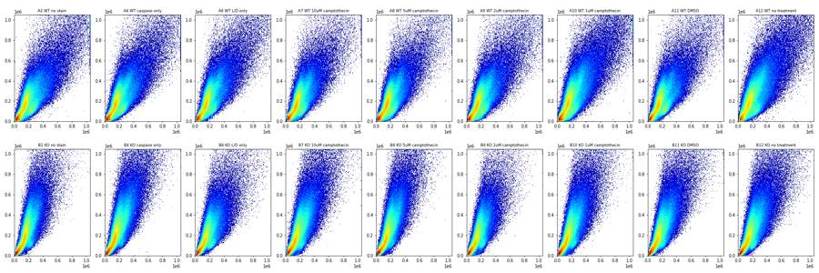
14
tool call · Read
{
"file_path": "/task/work/p_scatterlog.png"
}15
tool output
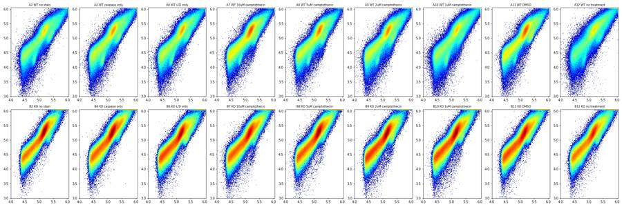
16
tool call · Read
{
"file_path": "/task/work/p_fl.png"
}17
tool output
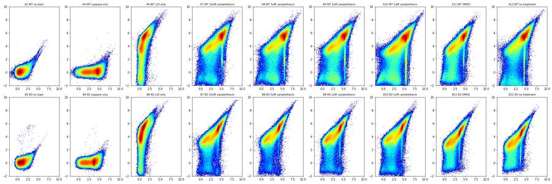
18
tool call · Read
{
"file_path": "/task/work/p_time.png"
}19
tool output
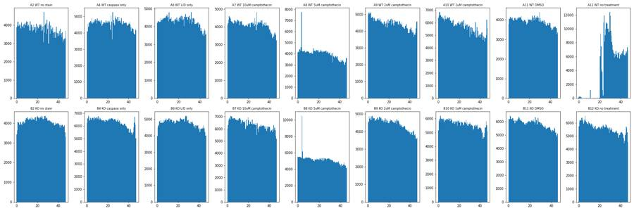
21
tool call · Read
{
"file_path": "/task/work/p_fsc_rl3.png"
}22
tool output
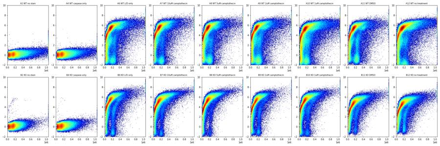
23
tool call · Read
{
"file_path": "/task/work/p_fsc_bl1.png"
}24
tool output
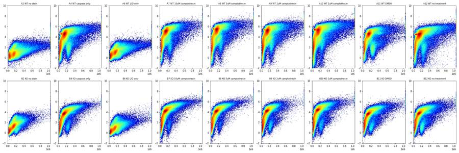
25
tool call · Read
{
"file_path": "/task/work/p_fscAH.png"
}26
tool output
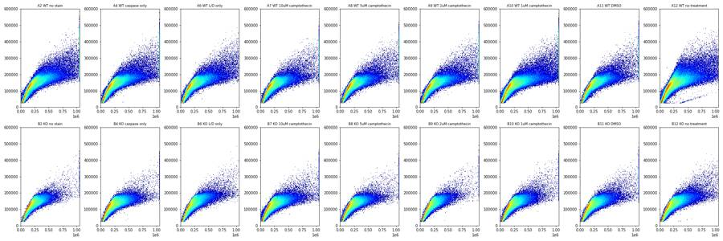
28
thinking
Still sorting through the raw data: I've spotted a clog in well A12 (WT, no treatment), debris throughout the plates, and an unusual narrow stripe in the caspase channel that I'm now tracing.
29
tool call · Bash
cd /task/work; cat > plot2.py <<'EOF'
import pickle, numpy as np, pandas as pd, matplotlib; matplotlib.use('Agg')
import matplotlib.pyplot as plt
from matplotlib.colors import LogNorm
D=pickle.load(open('D.pkl','rb'))
lay = pd.read_csv('/task/inputs/plate_layout.csv').set_index('well')
wells=list(lay.index)
a=lambda x: np.arcsinh(x/150)
def grid(fn, name, ws=wells, figsize=(27,9)):
fig,axs=plt.subplots(2,9,figsize=figsize)
for i,w in enumerate(ws):
ax=axs[i//9,i%9]; fn(ax,D[w],w); ax.set_title(f"{w} {lay.loc[w,'sample']}",fontsize=9)
plt.tight_layout(); plt.savefig(name,dpi=70); plt.close()
# zombie-negative events scatter (stained wells)
def live_sc(ax,e,w):
m = a(e['RL3-A'])<2.5
ax.hist2d(e['FSC-A'][m],e['SSC-A'][m],bins=150,range=[[0,6e5],[0,6e5]],norm=LogNorm(),cmap='jet')
grid(live_sc,'p_zneg_scatter.png')
def dead_sc(ax,e,w):
m = a(e['RL3-A'])>=2.5
ax.hist2d(e['FSC-A'][m],e['SSC-A'][m],bins=150,range=[[0,6e5],[0,6e5]],norm=LogNorm(),cmap='jet')
grid(dead_sc,'p_zpos_scatter.png')
# BL1 histograms 1D
def h(ax,e,w):
ax.hist(a(e['BL1-A']),bins=300,range=(-2,10));
grid(h,'p_bl1hist.png')
def h2(ax,e,w):
ax.hist(a(e['RL3-A']),bins=300,range=(-3,10));
grid(h2,'p_rl3hist.png')
# time vs BL1
def tb(ax,e,w):
ax.hist2d(e['Time'],a(e['BL1-A']),bins=[100,150],range=[[0,48],[-2,10]],norm=LogNorm(),cmap='jet')
grid(tb,'p_time_bl1.png')
def tr(ax,e,w):
ax.hist2d(e['Time'],a(e['RL3-A']),bins=[100,150],range=[[0,48],[-3,10]],norm=LogNorm(),cmap='jet')
grid(tr,'p_time_rl3.png')
def tf(ax,e,w):
ax.hist2d(e['Time'],e['FSC-A'],bins=[100,150],range=[[0,48],[0,6e5]],norm=LogNorm(),cmap='jet')
grid(tf,'p_time_fsc.png')
EOF
python3 -I plot2.py30
tool call · Read
{
"file_path": "/task/work/p_zneg_scatter.png"
}31
tool call · Read
{
"file_path": "/task/work/p_zpos_scatter.png"
}32
tool call · Read
{
"file_path": "/task/work/p_bl1hist.png"
}33
tool call · Read
{
"file_path": "/task/work/p_time_bl1.png"
}34
tool output
(Bash completed with no output)
35
tool output
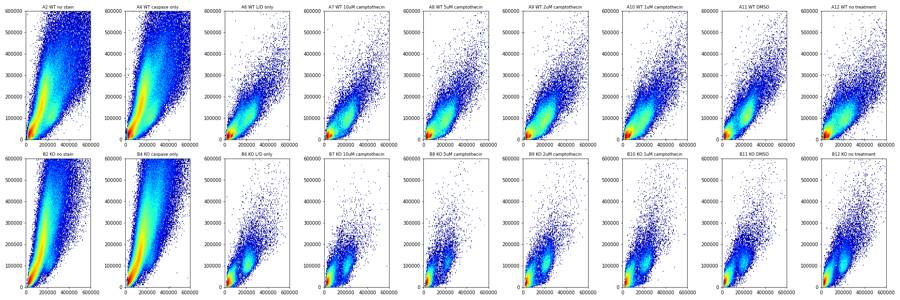
36
tool output
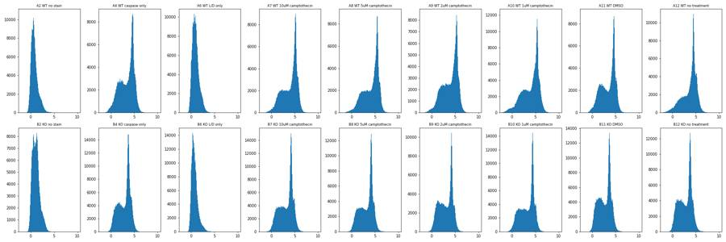
37
tool output
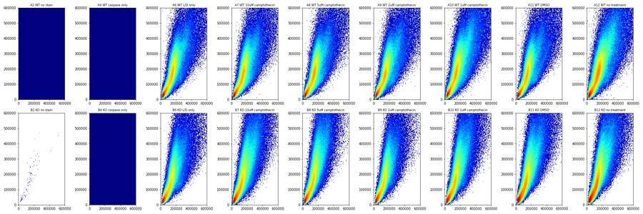
38
tool output
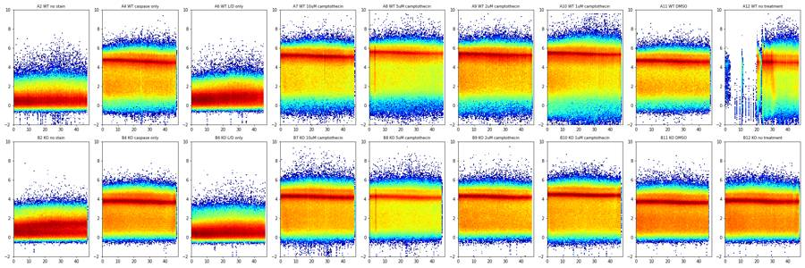
40
tool call · Bash
cd /task/work; cat > stripe.py <<'EOF'
import pickle, numpy as np, pandas as pd
D=pickle.load(open('D.pkl','rb'))
a=lambda x: np.arcsinh(x/150)
np.set_printoptions(linewidth=250, suppress=True)
for w in ['A4','A8','A10','A11','B8','B11']:
e=D[w]; b=a(e['BL1-A']); r=a(e['RL3-A'])
hh,ed=np.histogram(b,bins=240,range=(-2,10)); mode=ed[np.argmax(hh)]+0.025
m=(np.abs(b-mode)<0.12)
print(w,'mode',round(mode,2),'BL1',round(150*np.sinh(mode)),'n in stripe',m.sum(), 'frac',round(m.mean(),3))
for nm,mm in [('stripe',m),('stripe&RL3<1',m&(r<1)),('rest',~m)]:
q=[5,25,50,75,95]
print(' ',nm,mm.sum(),'FSC-A',np.percentile(e['FSC-A'][mm],q).round(-3)/1000,'SSC-A',np.percentile(e['SSC-A'][mm],q).round(-3)/1000,'FSC-W',np.percentile(e['FSC-W'][mm],q).round(),'FSC-H',np.percentile(e['FSC-H'][mm],q).round(-3)/1000,'RL3',np.percentile(e['RL3-A'][mm],q).round())
# BL1 mode as function of FSC-A bin
for lo,hi in [(0,40e3),(40e3,80e3),(80e3,120e3),(120e3,200e3),(200e3,300e3),(300e3,500e3),(500e3,1.04e6)]:
mm=(e['FSC-A']>=lo)&(e['FSC-A']<hi)
hh,ed=np.histogram(b[mm],bins=120,range=(-2,10));
print(' FSC',lo,hi,mm.sum(),'BL1 mode',round(ed[np.argmax(hh)]+0.05,2),'peak frac',round(hh.max()/mm.sum(),3), 'median',round(np.median(b[mm]),2))
EOF
python3 -I stripe.py41
tool output
A4 mode 4.63 BL1 7649 n in stripe 51204 frac 0.116
stripe 51204 FSC-A [ 62. 119. 151. 181. 343.] SSC-A [ 16. 105. 168. 229. 375.] FSC-W [ 67. 81. 88. 97. 151.] FSC-H [ 59. 101. 122. 135. 162.] RL3 [-69. -17. 20. 58. 117.]
stripe&RL3<1 50800 FSC-A [ 62. 119. 151. 180. 333.] SSC-A [ 16. 104. 167. 227. 366.] FSC-W [ 66. 81. 88. 97. 149.] FSC-H [ 59. 101. 122. 135. 161.] RL3 [-69. -18. 19. 57. 113.]
rest 389616 FSC-A [ 27. 50. 118. 191. 457.] SSC-A [ 14. 37. 101. 210. 500.] FSC-W [ 49. 68. 83. 98. 171.] FSC-H [ 28. 48. 100. 135. 179.] RL3 [-68. -18. 17. 54. 122.]
FSC 0 40000.0 70091 BL1 mode 1.25 peak frac 0.047 median 1.46
FSC 40000.0 80000.0 88668 BL1 mode 4.55 peak frac 0.035 median 2.51
FSC 80000.0 120000.0 51227 BL1 mode 4.55 peak frac 0.049 median 3.81
FSC 120000.0 200000.0 132473 BL1 mode 4.65 peak frac 0.095 median 4.5
FSC 200000.0 300000.0 51457 BL1 mode 4.85 peak frac 0.052 median 4.53
FSC 300000.0 500000.0 29808 BL1 mode 5.35 peak frac 0.058 median 4.91
FSC 500000.0 1040000.0 13926 BL1 mode 5.55 peak frac 0.054 median 5.2
A8 mode 5.48 BL1 17898 n in stripe 49188 frac 0.128
stripe 49188 FSC-A [ 67. 128. 153. 180. 291.] SSC-A [ 20. 111. 166. 223. 365.] FSC-W [ 71. 82. 89. 97. 142.] FSC-H [ 63. 108. 123. 135. 155.] RL3 [ 271. 9874. 15435. 21085. 33020.]
stripe&RL3<1 1867 FSC-A [ 50. 62. 69. 88. 162.] SSC-A [ 9. 15. 21. 46. 127.] FSC-W [51. 70. 76. 82. 97.] FSC-H [ 52. 61. 66. 76. 130.] RL3 [-307. -124. -11. 90. 162.]
rest 335804 FSC-A [ 28. 52. 123. 183. 389.] SSC-A [ 15. 40. 105. 211. 457.] FSC-W [ 50. 69. 83. 96. 161.] FSC-H [ 28. 50. 103. 133. 170.] RL3 [ -128. 1896. 7072. 19071. 38579.]
FSC 0 40000.0 57502 BL1 mode 1.75 peak frac 0.039 median 1.92
FSC 40000.0 80000.0 71490 BL1 mode 5.55 peak frac 0.032 median 3.07
FSC 80000.0 120000.0 45862 BL1 mode 5.45 peak frac 0.05 median 4.63
FSC 120000.0 200000.0 134382 BL1 mode 5.45 peak frac 0.101 median 5.31
FSC 200000.0 300000.0 43491 BL1 mode 5.65 peak frac 0.062 median 5.42
FSC 300000.0 500000.0 22192 BL1 mode 6.15 peak frac 0.067 median 5.81
FSC 500000.0 1040000.0 8141 BL1 mode 6.35 peak frac 0.056 median 5.99
A10 mode 5.38 BL1 16195 n in stripe 66621 frac 0.121
stripe 66621 FSC-A [ 59. 98. 148. 183. 352.] SSC-A [ 15. 63. 166. 239. 429.] FSC-W [ 57. 79. 87. 98. 160.] FSC-H [ 59. 81. 120. 134. 160.] RL3 [ -42. 1124. 11403. 16766. 27906.]
stripe&RL3<1 7516 FSC-A [ 44. 60. 68. 79. 142.] SSC-A [ 3. 14. 19. 31. 97.] FSC-W [43. 64. 74. 81. 98.] FSC-H [ 48. 60. 65. 71. 105.] RL3 [-421. -151. -17. 86. 160.]
rest 485969 FSC-A [ 27. 51. 121. 193. 517.] SSC-A [ 13. 38. 108. 234. 612.] FSC-W [ 46. 67. 83. 101. 192.] FSC-H [ 28. 48. 100. 134. 179.] RL3 [ -173. 1260. 5332. 15806. 36436.]
FSC 0 40000.0 85644 BL1 mode 1.55 peak frac 0.034 median 1.74
FSC 40000.0 80000.0 111471 BL1 mode 5.35 peak frac 0.053 median 2.98
FSC 80000.0 120000.0 66182 BL1 mode 5.35 peak frac 0.055 median 4.46
FSC 120000.0 200000.0 162954 BL1 mode 5.35 peak frac 0.089 median 5.1
FSC 200000.0 300000.0 60683 BL1 mode 5.55 peak frac 0.058 median 5.3
FSC 300000.0 500000.0 38293 BL1 mode 6.05 peak frac 0.065 median 5.71
FSC 500000.0 1040000.0 20011 BL1 mode 6.25 peak frac 0.057 median 6.01
A11 mode 4.63 BL1 7649 n in stripe 49895 frac 0.132
stripe 49895 FSC-A [ 72. 132. 154. 180. 312.] SSC-A [ 26. 126. 174. 231. 358.] FSC-W [ 74. 83. 89. 96. 143.] FSC-H [ 65. 111. 125. 136. 158.] RL3 [ 417. 10990. 15372. 19943. 27901.]
stripe&RL3<1 1064 FSC-A [ 50. 63. 77. 119. 276.] SSC-A [ 9. 15. 29. 89. 188.] FSC-W [ 55. 70. 79. 87. 114.] FSC-H [ 50. 61. 69. 98. 161.] RL3 [-243. -91. 12. 108. 166.]
rest 327325 FSC-A [ 27. 48. 119. 192. 415.] SSC-A [ 15. 39. 103. 209. 467.] FSC-W [ 50. 68. 83. 98. 160.] FSC-H [ 28. 47. 100. 135. 175.] RL3 [ -98. 1614. 5528. 16813. 35655.]
FSC 0 40000.0 61733 BL1 mode 1.35 peak frac 0.049 median 1.5
FSC 40000.0 80000.0 68479 BL1 mode 1.85 peak frac 0.036 median 2.4
FSC 80000.0 120000.0 42888 BL1 mode 4.15 peak frac 0.055 median 3.91
FSC 120000.0 200000.0 120732 BL1 mode 4.65 peak frac 0.123 median 4.56
FSC 200000.0 300000.0 47396 BL1 mode 4.75 peak frac 0.054 median 4.52
FSC 300000.0 500000.0 25042 BL1 mode 5.45 peak frac 0.059 median 4.83
FSC 500000.0 1040000.0 9585 BL1 mode 5.45 peak frac 0.045 median 5.02
B8 mode 4.18 BL1 4877 n in stripe 72382 frac 0.147
stripe 72382 FSC-A [ 97. 126. 145. 166. 216.] SSC-A [ 77. 134. 179. 233. 340.] FSC-W [ 76. 82. 87. 94. 124.] FSC-H [ 85. 106. 118. 129. 145.] RL3 [ 6987. 11764. 14776. 18232. 24313.]
stripe&RL3<1 598 FSC-A [ 42. 56. 156. 221. 264.] SSC-A [ 11. 19. 85. 146. 269.] FSC-W [ 56. 71. 88. 95. 106.] FSC-H [ 38. 51. 122. 159. 172.] RL3 [-443. -236. -82. 69. 153.]
rest 421053 FSC-A [ 27. 44. 90. 162. 326.] SSC-A [ 18. 39. 90. 225. 539.] FSC-W [ 48. 65. 79. 94. 154.] FSC-H [ 28. 43. 79. 120. 154.] RL3 [ 490. 2637. 6365. 17079. 41435.]
FSC 0 40000.0 88905 BL1 mode 0.95 peak frac 0.051 median 1.29
FSC 40000.0 80000.0 106337 BL1 mode 1.55 peak frac 0.038 median 2.2
FSC 80000.0 120000.0 73562 BL1 mode 4.05 peak frac 0.081 median 3.69
FSC 120000.0 200000.0 149574 BL1 mode 4.25 peak frac 0.159 median 4.2
FSC 200000.0 300000.0 47617 BL1 mode 4.85 peak frac 0.095 median 4.63
FSC 300000.0 500000.0 22150 BL1 mode 5.05 peak frac 0.102 median 5.07
FSC 500000.0 1040000.0 4812 BL1 mode 5.55 peak frac 0.094 median 5.62
B11 mode 3.68 BL1 2957 n in stripe 74804 frac 0.133
stripe 74804 FSC-A [ 95. 120. 138. 159. 207.] SSC-A [ 72. 124. 164. 212. 307.] FSC-W [ 75. 81. 86. 93. 133.] FSC-H [ 82. 102. 114. 124. 140.] RL3 [ 3889. 6340. 7871. 9637. 12828.]
stripe&RL3<1 426 FSC-A [ 37. 57. 70. 116. 195.] SSC-A [ 10. 15. 28. 81. 160.] FSC-W [53. 69. 76. 83. 98.] FSC-H [ 3
… [764 more characters not shown]43
tool call · Bash
cd /task/work; cat > plot3.py <<'EOF'
import pickle, numpy as np, pandas as pd, matplotlib; matplotlib.use('Agg')
import matplotlib.pyplot as plt
from matplotlib.colors import LogNorm
D=pickle.load(open('D.pkl','rb'))
lay = pd.read_csv('/task/inputs/plate_layout.csv').set_index('well')
wells=list(lay.index)
a=lambda x: np.arcsinh(x/150)
def grid(fn, name, ws=wells, figsize=(27,9)):
fig,axs=plt.subplots(2,9,figsize=figsize)
for i,w in enumerate(ws):
ax=axs[i//9,i%9]; fn(ax,D[w],w); ax.set_title(f"{w} {lay.loc[w,'sample']}",fontsize=9)
plt.tight_layout(); plt.savefig(name,dpi=70); plt.close()
def sc(ax,e,w):
ax.hist2d(e['FSC-A'],e['SSC-A'],bins=200,range=[[0,5e5],[0,5e5]],cmap='jet',norm=LogNorm())
grid(sc,'p3_scatter_zoom.png')
def sclin(ax,e,w):
ax.hist2d(e['FSC-A'],e['SSC-A'],bins=120,range=[[0,5e5],[0,5e5]],cmap='jet')
grid(sclin,'p3_scatter_zoom_lin.png')
def cellmask(e): return (e['FSC-A']>90e3)&(e['FSC-A']<600e3)&(e['SSC-A']>30e3)&(e['SSC-A']<700e3)
def fw(ax,e,w):
m=cellmask(e)
ax.hist2d(e['FSC-A'][m],e['FSC-W'][m],bins=[150,150],range=[[0,6e5],[40,250]],cmap='jet',norm=LogNorm())
grid(fw,'p3_fscW.png')
def fh(ax,e,w):
m=cellmask(e)
ax.hist2d(e['FSC-A'][m],e['FSC-H'][m],bins=[150,150],range=[[0,6e5],[0,3e5]],cmap='jet',norm=LogNorm())
grid(fh,'p3_fscH.png')
def sh(ax,e,w):
m=cellmask(e)
ax.hist2d(e['SSC-A'][m],e['SSC-H'][m],bins=[150,150],range=[[0,7e5],[0,5e5]],cmap='jet',norm=LogNorm())
grid(sh,'p3_sscH.png')
def fl(ax,e,w):
m=cellmask(e)&(e['FSC-W']<110)
ax.hist2d(a(e['BL1-A'][m]),a(e['RL3-A'][m]),bins=200,range=[[-2,9],[-3,9]],norm=LogNorm(),cmap='jet')
grid(fl,'p3_fl_cells.png')
def rl(ax,e,w):
m=cellmask(e)&(e['FSC-W']<110)
ax.hist(a(e['RL3-A'][m]),bins=200,range=(-3,9)); ax.set_yscale('log')
grid(rl,'p3_rl3_cells.png')
EOF
python3 -I plot3.py44
tool call · Read
{
"file_path": "/task/work/p3_scatter_zoom_lin.png"
}45
tool call · Read
{
"file_path": "/task/work/p3_fscW.png"
}46
tool call · Read
{
"file_path": "/task/work/p3_fl_cells.png"
}47
tool call · Read
{
"file_path": "/task/work/p3_rl3_cells.png"
}48
tool output
(Bash completed with no output)
49
tool output
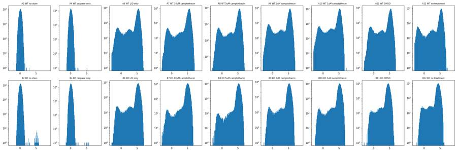
50
tool output
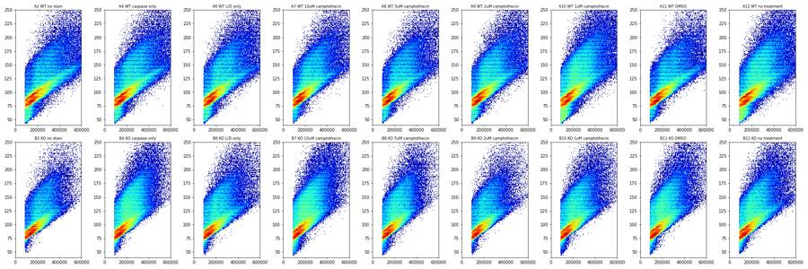
51
tool output
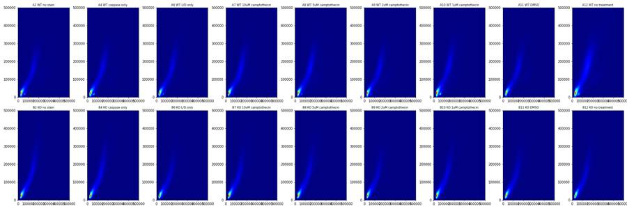
52
tool output
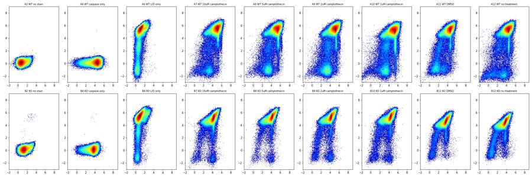
54
thinking
Gating is nearly settled: the bright caspase stripe is dead-cell DNA staining, and Zombie-negative live cells form a distinct cluster. I'm checking singlet discrimination next, before building the FlowKit gates.
55
tool call · Read
{
"file_path": "/task/work/p3_fscH.png"
}56
tool output
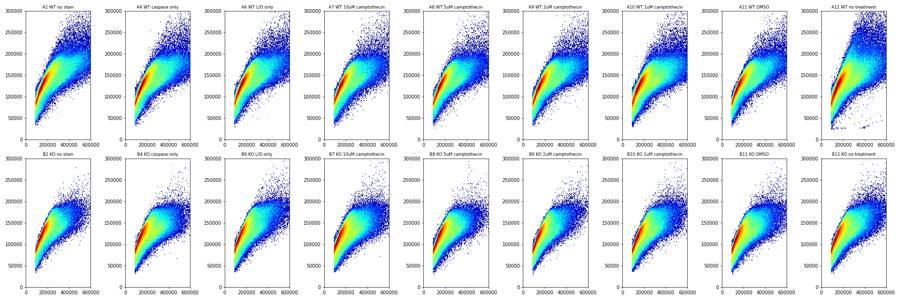
57
tool call · Read
{
"file_path": "/task/work/p3_sscH.png"
}58
tool output
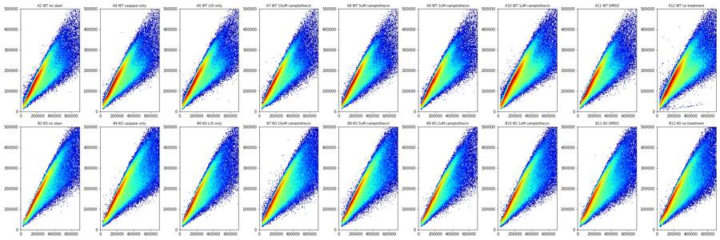
60
tool call · Bash
cd /task/work; cat > ratio.py <<'EOF'
import pickle, numpy as np, pandas as pd, matplotlib; matplotlib.use('Agg')
import matplotlib.pyplot as plt
from matplotlib.colors import LogNorm
D=pickle.load(open('D.pkl','rb'))
a=lambda x: np.arcsinh(x/150)
np.set_printoptions(linewidth=250, suppress=True)
fig,axs=plt.subplots(3,6,figsize=(24,12))
for j,w in enumerate(['A6','A8','A11','B6','B8','B11']):
e=D[w]
m=(e['FSC-A']>90e3)&(e['FSC-A']<600e3)&(e['SSC-A']>30e3)&(e['SSC-A']<700e3)
live=m&(e['RL3-A']<300)
rs=e['SSC-H']/e['SSC-A']; rf=e['FSC-H']/e['FSC-A']
print(w,'cells',m.sum(),'zneg',live.sum())
print(' SSC H/A all cells pct',np.percentile(rs[m],[1,5,10,25,50,75,90,95,99]).round(3))
print(' SSC H/A zneg pct',np.percentile(rs[live],[1,5,10,25,50,75,90,95,99]).round(3))
print(' FSC-W zneg pct',np.percentile(e['FSC-W'][live],[1,5,10,25,50,75,90,95,99]).round(0), 'SSC-W',np.percentile(e['SSC-W'][live],[1,5,10,25,50,75,90,95,99]).round(0))
axs[0,j].hist(rs[m],bins=200,range=(0.2,1.2)); axs[0,j].hist(rs[live],bins=200,range=(0.2,1.2)); axs[0,j].set_title(w+' SSC H/A cells / zneg'); axs[0,j].set_yscale('log')
axs[1,j].hist2d(e['SSC-A'][live],e['SSC-H'][live],bins=150,range=[[0,5e5],[0,4e5]],norm=LogNorm(),cmap='jet'); axs[1,j].plot([0,5e5],[0,5e5*0.75],'k-',lw=0.5)
axs[2,j].hist2d(e['FSC-A'][live],e['SSC-A'][live],bins=150,range=[[0,6e5],[0,6e5]],norm=LogNorm(),cmap='jet')
plt.tight_layout(); plt.savefig('p4_ratio.png',dpi=70)
EOF
python3 -I ratio.py61
tool call · Read
{
"file_path": "/task/work/p4_ratio.png"
}62
tool output
A6 cells 237620 zneg 19873 SSC H/A all cells pct [0.371 0.455 0.525 0.701 0.808 0.868 0.912 0.937 0.989] SSC H/A zneg pct [0.426 0.523 0.613 0.724 0.799 0.874 0.936 0.972 1.068] FSC-W zneg pct [ 64. 78. 81. 88. 95. 106. 120. 135. 170.] SSC-W [ 50. 66. 75. 83. 90. 99. 113. 127. 163.] A8 cells 234122 zneg 20993 SSC H/A all cells pct [0.367 0.46 0.537 0.717 0.815 0.869 0.911 0.935 0.981] SSC H/A zneg pct [0.44 0.566 0.664 0.756 0.829 0.889 0.941 0.971 1.048] FSC-W zneg pct [ 70. 79. 82. 88. 94. 103. 114. 128. 165.] SSC-W [ 51. 66. 76. 82. 88. 96. 108. 120. 157.] A11 cells 226597 zneg 22540 SSC H/A all cells pct [0.371 0.458 0.531 0.706 0.807 0.866 0.908 0.931 0.971] SSC H/A zneg pct [0.424 0.513 0.616 0.722 0.781 0.837 0.896 0.933 0.999] FSC-W zneg pct [ 75. 82. 86. 92. 99. 108. 121. 133. 165.] SSC-W [ 59. 77. 81. 87. 93. 101. 114. 125. 157.] B6 cells 231938 zneg 9311 SSC H/A all cells pct [0.383 0.479 0.552 0.715 0.829 0.887 0.925 0.944 0.979] SSC H/A zneg pct [0.458 0.571 0.662 0.757 0.811 0.855 0.895 0.925 0.983] FSC-W zneg pct [ 75. 82. 85. 90. 95. 102. 111. 121. 150.] SSC-W [ 62. 77. 81. 85. 90. 96. 106. 115. 145.] B8 cells 269448 zneg 3558 SSC H/A all cells pct [0.383 0.48 0.556 0.717 0.825 0.883 0.922 0.943 0.983] SSC H/A zneg pct [0.547 0.684 0.732 0.792 0.85 0.9 0.945 0.971 1.044] FSC-W zneg pct [ 74. 78. 81. 88. 93. 100. 106. 111. 129.] SSC-W [ 52. 73. 77. 83. 88. 94. 102. 106. 121.] B11 cells 285254 zneg 6515 SSC H/A all cells pct [0.369 0.464 0.53 0.69 0.821 0.885 0.926 0.947 0.985] SSC H/A zneg pct [0.471 0.591 0.676 0.763 0.821 0.87 0.919 0.947 1.003] FSC-W zneg pct [ 73. 78. 81. 87. 93. 101. 110. 120. 146.] SSC-W [ 58. 74. 78. 84. 89. 96. 106. 114. 139.]
63
tool output
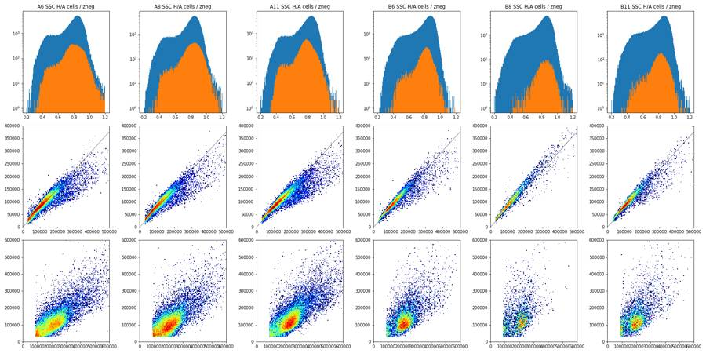
65
tool call · Read
{
"file_path": "/task/work/p3_scatter_zoom.png"
}66
tool output
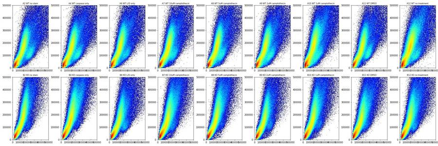
68
tool call · Bash
cd /task/work; cat > p5.py <<'EOF'
import pickle, numpy as np, pandas as pd, matplotlib; matplotlib.use('Agg')
import matplotlib.pyplot as plt
from matplotlib.colors import LogNorm
D=pickle.load(open('D.pkl','rb'))
lay = pd.read_csv('/task/inputs/plate_layout.csv').set_index('well')
a=lambda x: np.arcsinh(x/150)
ws=['A6','A7','A8','A9','A10','A11','A12','B6','B7','B8','B9','B10','B11','B12']
fig,axs=plt.subplots(4,14,figsize=(42,12))
for j,w in enumerate(ws):
e=D[w]; zn=e['RL3-A']<300
axs[0,j].hist(e['FSC-A'][zn],bins=150,range=(0,5e5)); axs[0,j].set_title(w+' '+lay.loc[w,'sample']+' zneg FSC-A',fontsize=8)
axs[1,j].hist(e['SSC-A'][zn&(e['FSC-A']>100e3)],bins=150,range=(0,5e5)); axs[1,j].set_title('zneg SSC-A | FSC>100k',fontsize=8)
axs[2,j].hist2d(e['FSC-A'][zn],e['SSC-A'][zn],bins=100,range=[[0,5e5],[0,4e5]],cmap='jet',norm=LogNorm())
axs[3,j].hist2d(e['FSC-A'][zn],a(e['BL1-A'][zn]),bins=100,range=[[0,5e5],[-2,8]],cmap='jet',norm=LogNorm())
plt.tight_layout(); plt.savefig('p5_zneg.png',dpi=60)
EOF
python3 -I p5.py69
tool call · Read
{
"file_path": "/task/work/p5_zneg.png"
}70
tool output
(Bash completed with no output)
71
tool output
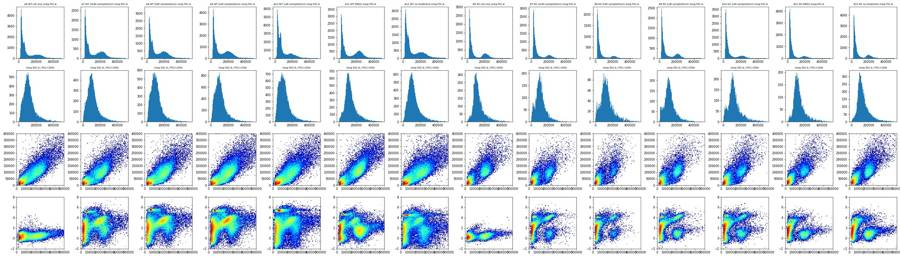
73
tool call · Bash
cd /task/work; cat > p6.py <<'EOF'
import pickle, numpy as np, pandas as pd, matplotlib; matplotlib.use('Agg')
import matplotlib.pyplot as plt
from matplotlib.colors import LogNorm
from matplotlib.path import Path
D=pickle.load(open('D.pkl','rb'))
lay = pd.read_csv('/task/inputs/plate_layout.csv').set_index('well')
a=lambda x: np.arcsinh(x/150)
cellpoly=Path([(125e3,50e3),(220e3,50e3),(340e3,100e3),(480e3,250e3),(480e3,560e3),(260e3,560e3),(125e3,330e3)])
def gates(e):
c=cellpoly.contains_points(e[['FSC-A','SSC-A']].values)
r=e['SSC-H']/e['SSC-A']
s=c&(r>0.65)&(r<1.15)
return c,s
ws=list(lay.index)
fig,axs=plt.subplots(4,18,figsize=(54,12))
for j,w in enumerate(ws):
e=D[w]; c,s=gates(e)
r=a(e['RL3-A'][s]); b=a(e['BL1-A'][s])
axs[0,j].hist(r,bins=220,range=(-3,8)); axs[0,j].set_title(w+' '+lay.loc[w,'sample'],fontsize=8); axs[0,j].set_ylim(0,np.histogram(r[r<3.5],bins=220,range=(-3,8))[0].max()*1.5)
for t in [1,2,3]: axs[0,j].axvline(t,color='r',lw=0.5)
axs[1,j].hist2d(e['FSC-A'][s],r,bins=120,range=[[1e5,5e5],[-3,8]],cmap='jet',norm=LogNorm())
axs[2,j].hist2d(b,r,bins=150,range=[[-2,8],[-3,8]],cmap='jet',norm=LogNorm())
lv=r<1.5
axs[3,j].hist(b[lv],bins=120,range=(-2,8)); axs[3,j].set_title(f'live n={lv.sum()} / singlets {s.sum()} / cells {c.sum()}',fontsize=7)
print(w,lay.loc[w,'sample'],'cells',c.sum(),'singlets',s.sum(),'RL3<1.5:',lv.sum(), '1.5-3.5:',((r>=1.5)&(r<3.5)).sum())
plt.tight_layout(); plt.savefig('p6.png',dpi=60)
EOF
python3 -I p6.py74
tool call · Read
{
"file_path": "/task/work/p6.png"
}75
tool output
A2 WT no stain cells 162679 singlets 128783 RL3<1.5: 128780 1.5-3.5: 3 A4 WT caspase only cells 196930 singlets 156536 RL3<1.5: 156534 1.5-3.5: 1 A6 WT L/D only cells 186352 singlets 150516 RL3<1.5: 14065 1.5-3.5: 7812 A7 WT 10uM camptothecin cells 188810 singlets 149420 RL3<1.5: 12570 1.5-3.5: 5326 A8 WT 5uM camptothecin cells 183957 singlets 149434 RL3<1.5: 15483 1.5-3.5: 6566 A9 WT 2uM camptothecin cells 195884 singlets 157445 RL3<1.5: 21171 1.5-3.5: 8001 A10 WT 1uM camptothecin cells 236196 singlets 181186 RL3<1.5: 17974 1.5-3.5: 9096 A11 WT DMSO cells 178807 singlets 145008 RL3<1.5: 18043 1.5-3.5: 7510 A12 WT no treatment cells 196033 singlets 147227 RL3<1.5: 15519 1.5-3.5: 7144 B2 KO no stain cells 165754 singlets 140317 RL3<1.5: 140262 1.5-3.5: 12 B4 KO caspase only cells 243642 singlets 190524 RL3<1.5: 190512 1.5-3.5: 7 B6 KO L/D only cells 162188 singlets 128470 RL3<1.5: 7785 1.5-3.5: 5417 B7 KO 10uM camptothecin cells 220913 singlets 164129 RL3<1.5: 4688 1.5-3.5: 3961 B8 KO 5uM camptothecin cells 187402 singlets 149567 RL3<1.5: 2780 1.5-3.5: 2308 B9 KO 2uM camptothecin cells 143124 singlets 116127 RL3<1.5: 5701 1.5-3.5: 3954 B10 KO 1uM camptothecin cells 193583 singlets 152443 RL3<1.5: 5738 1.5-3.5: 4580 B11 KO DMSO cells 191972 singlets 144348 RL3<1.5: 5122 1.5-3.5: 4948 B12 KO no treatment cells 195016 singlets 148670 RL3<1.5: 8021 1.5-3.5: 5936
76
tool output
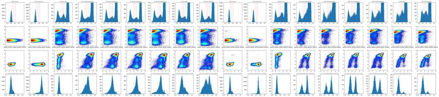
78
thinking
Gates are now set in exploration, and I'm fixing the caspase threshold against the L/D-only controls before building the FlowKit strategy and deliverables.
79
tool call · Bash
cd /task/work; cat > p7.py <<'EOF'
import pickle, numpy as np, pandas as pd, matplotlib; matplotlib.use('Agg')
import matplotlib.pyplot as plt
from matplotlib.colors import LogNorm
from matplotlib.path import Path
D=pickle.load(open('D.pkl','rb'))
lay = pd.read_csv('/task/inputs/plate_layout.csv').set_index('well')
a=lambda x: np.arcsinh(x/150)
np.set_printoptions(linewidth=250, suppress=True)
cellpoly=Path([(125e3,50e3),(220e3,50e3),(340e3,100e3),(480e3,250e3),(480e3,560e3),(260e3,560e3),(125e3,330e3)])
ws=list(lay.index)
fig,axs=plt.subplots(3,6,figsize=(26,12)); axs=axs.ravel()
for j,w in enumerate(ws):
e=D[w]; c=cellpoly.contains_points(e[['FSC-A','SSC-A']].values)
rr=e['SSC-H']/e['SSC-A']; s=c&(rr>0.65)&(rr<1.15)
r=a(e['RL3-A']); b=a(e['BL1-A'])
for thr,col in [(1.0,'C0'),(2.0,'C1'),(3.5,'C2')]:
lv=s&(r<thr)
axs[j].hist(b[lv],bins=140,range=(-2,8),histtype='step',color=col,label=f'RL3<{thr} n={lv.sum()}')
axs[j].set_title(w+' '+lay.loc[w,'sample']); axs[j].legend(fontsize=7)
for t in [2.0,2.5,3.0]: axs[j].axvline(t,color='r',lw=0.4)
lv=s&(r<1.5)
print(w,lay.loc[w,'sample'],'live',lv.sum(),'BL1 raw pct [50,90,95,99,99.5,99.9]',np.percentile(e['BL1-A'][lv],[50,90,95,99,99.5,99.9]).round(), ' %>asinh2.5(908):',round(100*(b[lv]>2.5).mean(),1),' >3(1503):',round(100*(b[lv]>3).mean(),1), '>2:',round(100*(b[lv]>2).mean(),1))
plt.tight_layout(); plt.savefig('p7.png',dpi=65)
EOF
python3 -I p7.py80
tool call · Read
{
"file_path": "/task/work/p7.png"
}81
tool output
A2 WT no stain live 128780 BL1 raw pct [50,90,95,99,99.5,99.9] [ 138. 486. 713. 1109. 1256. 1649.] %>asinh2.5(908): 2.3 >3(1503): 0.2 >2: 8.5 A4 WT caspase only live 156534 BL1 raw pct [50,90,95,99,99.5,99.9] [ 6699. 12470. 14912. 19469. 22031. 29832.] %>asinh2.5(908): 91.1 >3(1503): 88.5 >2: 93.6 A6 WT L/D only live 14065 BL1 raw pct [50,90,95,99,99.5,99.9] [ 76. 177. 221. 397. 638. 2298.] %>asinh2.5(908): 0.3 >3(1503): 0.2 >2: 0.6 A7 WT 10uM camptothecin live 12570 BL1 raw pct [50,90,95,99,99.5,99.9] [ 1449. 5587. 9685. 20168. 26066. 43651.] %>asinh2.5(908): 62.3 >3(1503): 48.8 >2: 71.9 A8 WT 5uM camptothecin live 15483 BL1 raw pct [50,90,95,99,99.5,99.9] [ 2002. 6290. 12502. 26123. 34003. 52110.] %>asinh2.5(908): 75.1 >3(1503): 62.0 >2: 83.3 A9 WT 2uM camptothecin live 21171 BL1 raw pct [50,90,95,99,99.5,99.9] [ 2020. 6321. 11755. 23766. 29505. 43206.] %>asinh2.5(908): 75.0 >3(1503): 61.9 >2: 83.4 A10 WT 1uM camptothecin live 17974 BL1 raw pct [50,90,95,99,99.5,99.9] [ 1792. 6666. 14658. 24627. 32115. 43888.] %>asinh2.5(908): 69.6 >3(1503): 56.6 >2: 78.3 A11 WT DMSO live 18043 BL1 raw pct [50,90,95,99,99.5,99.9] [ 434. 3171. 5742. 13154. 17558. 28639.] %>asinh2.5(908): 29.0 >3(1503): 21.2 >2: 41.8 A12 WT no treatment live 15519 BL1 raw pct [50,90,95,99,99.5,99.9] [ 669. 6021. 8463. 18057. 23888. 38012.] %>asinh2.5(908): 45.4 >3(1503): 38.1 >2: 53.5 B2 KO no stain live 140262 BL1 raw pct [50,90,95,99,99.5,99.9] [ 297. 777. 1136. 1696. 1893. 2304.] %>asinh2.5(908): 8.0 >3(1503): 1.9 >2: 16.0 B4 KO caspase only live 190512 BL1 raw pct [50,90,95,99,99.5,99.9] [ 3336. 5532. 6453. 8293. 9171. 11641.] %>asinh2.5(908): 96.0 >3(1503): 93.6 >2: 97.0 B6 KO L/D only live 7785 BL1 raw pct [50,90,95,99,99.5,99.9] [ 73. 173. 215. 485. 705. 1234.] %>asinh2.5(908): 0.3 >3(1503): 0.0 >2: 0.8 B7 KO 10uM camptothecin live 4688 BL1 raw pct [50,90,95,99,99.5,99.9] [ 2678. 6850. 8383. 14534. 19216. 43437.] %>asinh2.5(908): 56.7 >3(1503): 55.4 >2: 58.8 B8 KO 5uM camptothecin live 2780 BL1 raw pct [50,90,95,99,99.5,99.9] [ 2294. 6626. 8177. 13928. 18701. 27118.] %>asinh2.5(908): 57.6 >3(1503): 54.7 >2: 59.9 B9 KO 2uM camptothecin live 5701 BL1 raw pct [50,90,95,99,99.5,99.9] [ 371. 6318. 7749. 13374. 17802. 26834.] %>asinh2.5(908): 44.3 >3(1503): 42.8 >2: 46.3 B10 KO 1uM camptothecin live 5738 BL1 raw pct [50,90,95,99,99.5,99.9] [ 346. 6555. 8135. 15116. 21174. 39430.] %>asinh2.5(908): 40.1 >3(1503): 38.1 >2: 43.3 B11 KO DMSO live 5122 BL1 raw pct [50,90,95,99,99.5,99.9] [ 153. 1490. 3597. 8280. 13702. 21201.] %>asinh2.5(908): 11.3 >3(1503): 9.9 >2: 13.0 B12 KO no treatment live 8021 BL1 raw pct [50,90,95,99,99.5,99.9] [ 168. 1888. 3652. 8222. 12583. 24004.] %>asinh2.5(908): 12.1 >3(1503): 10.9 >2: 14.4
82
tool output
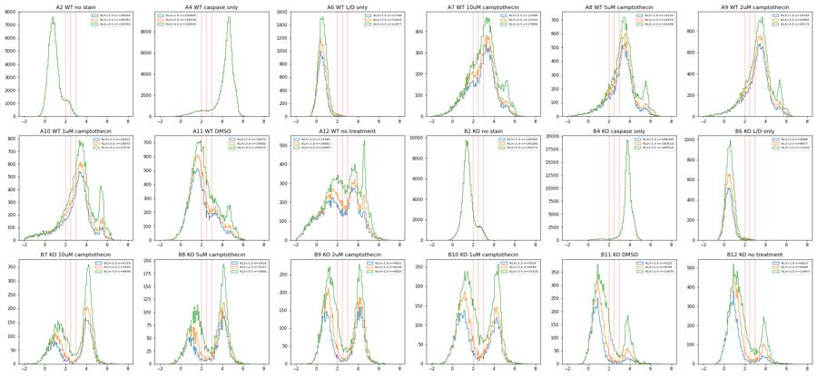
84
tool call · Bash
cd /task/work; cat > qc.py <<'EOF'
import pickle, numpy as np, pandas as pd, flowkit as fk
from matplotlib.path import Path
D=pickle.load(open('D.pkl','rb'))
lay = pd.read_csv('/task/inputs/plate_layout.csv').set_index('well')
np.set_printoptions(linewidth=250, suppress=True)
cellpoly=Path([(125e3,50e3),(220e3,50e3),(340e3,100e3),(480e3,250e3),(480e3,560e3),(260e3,560e3),(125e3,330e3)])
for w in lay.index:
e=D[w]; s=fk.Sample('/task/inputs/raw/'+lay.loc[w,'file']); md=s.get_metadata()
t=e['Time'].values
h,_=np.histogram(t,bins=np.arange(0,48.5,0.5));
h1,_=np.histogram(t,bins=np.arange(0,48.01,1.0)); med=np.median(h1[:-1])
c=cellpoly.contains_points(e[['FSC-A','SSC-A']].values); rr=e['SSC-H']/e['SSC-A']; sg=c&(rr>0.65)&(rr<1.15)
live=sg&(e['RL3-A']<300); pos=live&(e['BL1-A']>1000)
half=t<np.median(t)
f=lambda m: 100*(pos&m).sum()/max((live&m).sum(),1)
print(w,lay.loc[w,'sample'],'| n',len(e),'coinc',md.get('#coincidentcount'),'vol',md.get('vol'),'| rate/s med',med,'min',h1[:-1].min(),'max',h1.max(),'| frac events t<20s',round((t<20).mean(),3),
'| satFSC%',round(100*(e['FSC-A']>=1048575).mean(),2),'satSSC%',round(100*(e['SSC-A']>=1048575).mean(),2),'satBL1',(e['BL1-A']>=1048575).sum(),'satRL3',(e['RL3-A']>=1048575).sum(),
'| RL3>2500 %',round(100*(e['RL3-A']>2500).mean(),2),'n',(e['RL3-A']>2500).sum(),'| live',live.sum(),'pos% 1st/2nd half',round(f(half),1),round(f(~half),1))
EOF
python3 -I qc.py 2>&1 | grep -v Warn85
tool output
A2 WT no stain | n 365736 coinc 32822 vol 157000 | rate/s med 7948.0 min 6514 max 8559 | frac events t<20s 0.442 | satFSC% 1.27 satSSC% 1.6 satBL1 0 satRL3 0 | RL3>2500 % 0.03 n 109 | live 128780 pos% 1st/2nd half 1.5 1.7 A4 WT caspase only | n 440820 coinc 41140 vol 158000 | rate/s med 9483.0 min 8227 max 10043 | frac events t<20s 0.429 | satFSC% 0.69 satSSC% 0.96 satBL1 0 satRL3 0 | RL3>2500 % 0.0 n 18 | live 156534 pos% 1st/2nd half 90.9 90.4 A6 WT L/D only | n 412724 coinc 38046 vol 154000 | rate/s med 9114.0 min 545 max 9741 | frac events t<20s 0.444 | satFSC% 0.78 satSSC% 1.14 satBL1 0 satRL3 8 | RL3>2500 % 68.93 n 284475 | live 13888 pos% 1st/2nd half 0.1 0.4 A7 WT 10uM camptothecin | n 395514 coinc 31260 vol 157000 | rate/s med 8532.0 min 7026 max 9212 | frac events t<20s 0.438 | satFSC% 0.34 satSSC% 0.59 satBL1 1 satRL3 1 | RL3>2500 % 77.67 n 307184 | live 12449 pos% 1st/2nd half 61.1 59.5 A8 WT 5uM camptothecin | n 384992 coinc 28906 vol 157000 | rate/s med 8485.0 min 6222 max 12591 | frac events t<20s 0.458 | satFSC% 0.49 satSSC% 0.8 satBL1 5 satRL3 5 | RL3>2500 % 72.42 n 278819 | live 15337 pos% 1st/2nd half 73.5 72.5 A9 WT 2uM camptothecin | n 428254 coinc 39310 vol 158000 | rate/s med 9108.0 min 7638 max 10328 | frac events t<20s 0.444 | satFSC% 0.6 satSSC% 0.87 satBL1 1 satRL3 7 | RL3>2500 % 69.76 n 298757 | live 21011 pos% 1st/2nd half 73.1 72.6 A10 WT 1uM camptothecin | n 552590 coinc 69063 vol 158000 | rate/s med 11801.0 min 9391 max 13883 | frac events t<20s 0.459 | satFSC% 1.27 satSSC% 1.78 satBL1 30 satRL3 4 | RL3>2500 % 64.77 n 357896 | live 17776 pos% 1st/2nd half 67.7 67.3 A11 WT DMSO | n 377220 coinc 28444 vol 157000 | rate/s med 8127.0 min 6752 max 8473 | frac events t<20s 0.434 | satFSC% 0.35 satSSC% 0.6 satBL1 0 satRL3 0 | RL3>2500 % 69.9 n 263671 | live 17847 pos% 1st/2nd half 27.6 27.0 A12 WT no treatment | n 409074 coinc 57692 vol 157000 | rate/s med 12583.0 min 0 max 22923 | frac events t<20s 0.007 | satFSC% 1.42 satSSC% 2.03 satBL1 1 satRL3 4 | RL3>2500 % 73.11 n 299063 | live 15361 pos% 1st/2nd half 41.9 47.2 B2 KO no stain | n 392795 coinc 26007 vol 157000 | rate/s med 8365.0 min 7065 max 8910 | frac events t<20s 0.428 | satFSC% 0.04 satSSC% 0.45 satBL1 0 satRL3 0 | RL3>2500 % 0.03 n 101 | live 140260 pos% 1st/2nd half 6.4 6.9 B4 KO caspase only | n 605670 coinc 61934 vol 157000 | rate/s med 13169.0 min 10957 max 13619 | frac events t<20s 0.44 | satFSC% 0.04 satSSC% 0.54 satBL1 0 satRL3 0 | RL3>2500 % 0.0 n 17 | live 190510 pos% 1st/2nd half 95.8 95.7 B6 KO L/D only | n 457465 coinc 36300 vol 157000 | rate/s med 9902.0 min 8155 max 10556 | frac events t<20s 0.433 | satFSC% 0.09 satSSC% 0.43 satBL1 0 satRL3 3 | RL3>2500 % 78.53 n 359226 | live 7677 pos% 1st/2nd half 0.2 0.3 B7 KO 10uM camptothecin | n 612174 coinc 65284 vol 158000 | rate/s med 12993.0 min 10935 max 14304 | frac events t<20s 0.445 | satFSC% 0.1 satSSC% 0.61 satBL1 0 satRL3 28 | RL3>2500 % 74.98 n 459020 | live 4623 pos% 1st/2nd half 56.8 56.5 B8 KO 5uM camptothecin | n 493435 coinc 41719 vol 155000 | rate/s med 10804.0 min 929 max 15521 | frac events t<20s 0.459 | satFSC% 0.09 satSSC% 0.68 satBL1 0 satRL3 19 | RL3>2500 % 79.69 n 393208 | live 2727 pos% 1st/2nd half 56.7 58.3 B9 KO 2uM camptothecin | n 425772 coinc 28737 vol 157000 | rate/s med 9332.0 min 7427 max 9932 | frac events t<20s 0.449 | satFSC% 0.06 satSSC% 0.35 satBL1 0 satRL3 10 | RL3>2500 % 75.51 n 321489 | live 5599 pos% 1st/2nd half 45.4 43.4 B10 KO 1uM camptothecin | n 539106 coinc 47200 vol 157000 | rate/s med 11626.0 min 9447 max 12446 | frac events t<20s 0.443 | satFSC% 0.08 satSSC% 0.53 satBL1 0 satRL3 4 | RL3>2500 % 76.51 n 412457 | live 5628 pos% 1st/2nd half 38.8 41.0 B11 KO DMSO | n 561171 coinc 55299 vol 155000 | rate/s med 12408.0 min 1149 max 13143 | frac events t<20s 0.45 | satFSC% 0.09 satSSC% 0.55 satBL1 0 satRL3 1 | RL3>2500 % 60.58 n 339969 | live 4995 pos% 1st/2nd half 11.4 10.3 B12 KO no treatment | n 538223 coinc 51104 vol 158000 | rate/s med 11432.0 min 9237 max 12807 | frac events t<20s 0.447 | satFSC% 0.14 satSSC% 0.75 satBL1 0 satRL3 0 | RL3>2500 % 55.97 n 301221 | live 7835 pos% 1st/2nd half 11.7 11.8
87
agent
QC is done (A12 is a clear clog: 0.7% of its events arrive in the first 20 s). Now building the FlowKit gating strategy and writing the counts.
88
tool call · Bash
cd /task/work; cat > build.py <<'EOF'
import flowkit as fk, numpy as np, pandas as pd, warnings
warnings.filterwarnings('ignore')
lay = pd.read_csv('/task/inputs/plate_layout.csv')
OUT='/task/outputs/'
RL3_LIVE_MAX=300.0; RL3_DEAD_MIN=2500.0; BL1_POS_MIN=1000.0
gs=fk.GatingStrategy()
U='uncompensated'
# cells: polygon on FSC-A x SSC-A (linear)
cells=fk.gates.PolygonGate('cells',[fk.Dimension('FSC-A',compensation_ref=U),fk.Dimension('SSC-A',compensation_ref=U)],
[(125e3,50e3),(220e3,50e3),(340e3,100e3),(480e3,250e3),(480e3,560e3),(260e3,560e3),(125e3,330e3)])
gs.add_gate(cells,gate_path=('root',))
# singlets: SSC-H/SSC-A between 0.65 and 1.15
sing=fk.gates.PolygonGate('singlets',[fk.Dimension('SSC-A',compensation_ref=U),fk.Dimension('SSC-H',compensation_ref=U)],
[(30e3,0.65*30e3),(620e3,0.65*620e3),(620e3,1.15*620e3),(30e3,1.15*30e3)])
gs.add_gate(sing,gate_path=('root','cells'))
live=fk.gates.RectangleGate('live',[fk.Dimension('RL3-A',compensation_ref=U,range_min=None,range_max=RL3_LIVE_MAX)])
gs.add_gate(live,gate_path=('root','cells','singlets'))
dead=fk.gates.RectangleGate('dead',[fk.Dimension('RL3-A',compensation_ref=U,range_min=RL3_DEAD_MIN,range_max=None)])
gs.add_gate(dead,gate_path=('root','cells','singlets'))
pos=fk.gates.RectangleGate('casp_pos',[fk.Dimension('BL1-A',compensation_ref=U,range_min=BL1_POS_MIN,range_max=None)])
gs.add_gate(pos,gate_path=('root','cells','singlets','live'))
with open(OUT+'gates.xml','wb') as f: fk.export_gatingml(gs,f)
gs2=fk.parse_gating_xml(OUT+'gates.xml')
print(gs2.get_gate_ids())
roles={'cells':'cells','singlets':'singlets','live':'live','dead':'other','casp_pos':'marker_positive'}
parents={'cells':'all_events','singlets':'cells','live':'singlets','dead':'singlets','casp_pos':'live'}
rows=[]; extra=[]
for _,r in lay.iterrows():
s=fk.Sample('/task/inputs/raw/'+r.file)
res=gs2.gate_sample(s)
n=s.event_count
cnt={'all_events':n}
rows.append(dict(file=r.file,well=r.well,population='all_events',role='other',parent='none',count=n,pct_of_parent=''))
for g in ['cells','singlets','live','dead','casp_pos']:
cnt[g]=int(res.get_gate_count(g))
for g in ['cells','singlets','live','dead','casp_pos']:
p=parents[g]
rows.append(dict(file=r.file,well=r.well,population=g,role=roles[g],parent=p,count=cnt[g],pct_of_parent=(100*cnt[g]/cnt[p] if cnt[p] else '')))
# median BL1 in live for secondary metric
ev=s.get_events('raw'); bl1=ev[:,s.pnn_labels.index('BL1-A')]
m=res.get_gate_membership('live'); md=res.get_gate_membership('dead')
extra.append(dict(well=r.well,sample=r['sample'],genotype=r.genotype,treatment=r.treatment,**cnt,live_medBL1=np.median(bl1[m]),dead_medBL1=np.median(bl1[md]) if md.sum() else np.nan))
c=pd.DataFrame(rows); c.to_csv(OUT+'counts.csv',index=False)
x=pd.DataFrame(extra)
x['pct_cells']=100*x.cells/x.all_events; x['pct_singlets']=100*x.singlets/x.cells; x['pct_live']=100*x.live/x.singlets; x['pct_dead']=100*x.dead/x.singlets; x['pct_casp_pos']=100*x.casp_pos/x.live
x.to_csv('/task/work/per_well.csv',index=False)
pd.set_option('display.width',250); print(x.round(1).to_string())
EOF
python3 -I build.py 2>&1 | grep -v -i warn89
tool output
[('cells', ('root',)), ('singlets', ('root', 'cells')), ('live', ('root', 'cells', 'singlets')), ('casp_pos', ('root', 'cells', 'singlets', 'live')), ('dead', ('root', 'cells', 'singlets'))]
well sample genotype treatment all_events cells singlets live dead casp_pos live_medBL1 dead_medBL1 pct_cells pct_singlets pct_live pct_dead pct_casp_pos
0 A2 WT no stain WT no stain 365736 162679 128783 128780 0 2039 138.0 NaN 44.5 79.2 100.0 0.0 1.6
1 A4 WT caspase only WT caspase only 440820 196930 156536 156534 1 141887 6699.0 6184.0 44.7 79.5 100.0 0.0 90.6
2 A6 WT L/D only WT L/D only 412724 186352 150516 13888 128610 36 76.0 231.0 45.2 80.8 9.2 85.4 0.3
3 A7 WT 10uM camptothecin WT 10uM camptothecin 395514 188810 149420 12449 131507 7507 1450.0 12437.0 47.7 79.1 8.3 88.0 60.3
4 A8 WT 5uM camptothecin WT 5uM camptothecin 384992 183957 149434 15337 127361 11204 2002.0 16323.0 47.8 81.2 10.3 85.2 73.1
5 A9 WT 2uM camptothecin WT 2uM camptothecin 428254 195882 157444 21010 128256 15316 2019.0 13435.0 45.7 80.4 13.3 81.5 72.9
6 A10 WT 1uM camptothecin WT 1uM camptothecin 552590 236196 181186 17776 154092 12000 1790.0 13799.5 42.7 76.7 9.8 85.0 67.5
7 A11 WT DMSO WT DMSO 377220 178807 145008 17847 119435 4870 433.0 7567.0 47.4 81.1 12.3 82.4 27.3
8 A12 WT no treatment WT no treatment 409074 196033 147227 15361 124546 6762 663.0 6910.0 47.9 75.1 10.4 84.6 44.0
9 B2 KO no stain KO no stain 392795 165754 140317 140260 43 9386 297.0 1476.0 42.2 84.7 100.0 0.0 6.7
10 B4 KO caspase only KO caspase only 605670 243642 190524 190510 5 182349 3336.0 3562.0 40.2 78.2 100.0 0.0 95.7
11 B6 KO L/D only KO L/D only 457465 162188 128470 7677 115247 19 73.0 198.0 35.5 79.2 6.0 89.7 0.2
12 B7 KO 10uM camptothecin KO 10uM camptothecin 612174 220913 164129 4623 155457 2620 2698.0 5543.0 36.1 74.3 2.8 94.7 56.7
13 B8 KO 5uM camptothecin KO 5uM camptothecin 493435 187402 149567 2727 144457 1569 2322.0 5212.0 38.0 79.8 1.8 96.6 57.5
14 B9 KO 2uM camptothecin KO 2uM camptothecin 425772 143124 116127 5599 106458 2484 371.0 5459.0 33.6 81.1 4.8 91.7 44.4
15 B10 KO 1uM camptothecin KO 1uM camptothecin 539106 193583 152443 5628 142104 2250 346.0 6513.0 35.9 78.7 3.7 93.2 40.0
16 B11 KO DMSO KO DMSO 561171 191972 144348 4995 134265 539 151.0 3249.0 34.2 75.2 3.5 93.0 10.8
17 B12 KO no treatment KO no treatment 538223 195016 148670 7835 134700 921 166.0 3549.0 36.2 76.2 5.3 90.6 11.891
tool call · Bash
cd /task/work; cat > sens.py <<'EOF'
import pickle, numpy as np, pandas as pd
from matplotlib.path import Path
D=pickle.load(open('D.pkl','rb'))
lay = pd.read_csv('/task/inputs/plate_layout.csv').set_index('well')
ws=['A7','A8','A9','A10','A11','A12','B7','B8','B9','B10','B11','B12']
def run(fmin=125e3, rl=300, bl=1000, rlo=0.65):
poly=Path([(fmin,50e3),(220e3,50e3),(340e3,100e3),(480e3,250e3),(480e3,560e3),(260e3,560e3),(fmin,330e3)])
out={}
for w in ws:
e=D[w]; c=poly.contains_points(e[['FSC-A','SSC-A']].values); rr=e['SSC-H']/e['SSC-A']; s=c&(rr>rlo)&(rr<1.15)
lv=s&(e['RL3-A']<rl); out[w]=(100*(lv&(e['BL1-A']>bl)).sum()/lv.sum(), 100*lv.sum()/s.sum())
return out
rows=[]
for name,kw in [('base',{}),('BL1>700',dict(bl=700)),('BL1>1500',dict(bl=1500)),('BL1>2500',dict(bl=2500)),('RL3<100',dict(rl=100)),('RL3<1000',dict(rl=1000)),('RL3<2500',dict(rl=2500)),('FSC>100k',dict(fmin=100e3)),('FSC>160k',dict(fmin=160e3)),('H/A>0.75',dict(rlo=0.75))]:
o=run(**kw); rows.append(pd.Series({w:o[w][0] for w in ws},name=name+' %pos'));
if name in('base','RL3<1000','FSC>100k','FSC>160k'): rows.append(pd.Series({w:o[w][1] for w in ws},name=name+' %live'))
pd.set_option('display.width',250); print(pd.DataFrame(rows).round(1).to_string())
EOF
python3 -I sens.py92
tool call · Skill
{
"skill": "dataviz"
}93
tool output
A7 A8 A9 A10 A11 A12 B7 B8 B9 B10 B11 B12 base %pos 60.3 73.0 72.9 67.5 27.3 44.0 56.7 57.5 44.4 40.0 10.8 11.7 base %live 8.3 10.3 13.3 9.8 12.3 10.4 2.8 1.8 4.8 3.7 3.5 5.3 BL1>700 %pos 67.2 79.6 79.6 74.4 34.1 49.2 57.7 59.0 45.3 41.6 11.6 12.7 BL1>1500 %pos 48.9 62.1 61.9 56.6 21.2 38.1 55.6 55.1 43.1 38.3 9.7 10.8 BL1>2500 %pos 30.2 39.2 40.0 35.6 13.1 27.0 51.4 48.6 38.9 33.6 7.8 8.4 RL3<100 %pos 60.6 73.9 72.8 67.1 26.6 43.5 58.6 60.7 48.3 42.6 9.7 10.9 RL3<1000 %pos 61.6 74.1 74.1 69.7 29.8 47.0 55.2 54.1 41.4 39.8 16.4 17.8 RL3<1000 %live 10.2 12.6 16.0 12.5 15.2 13.0 4.0 2.6 6.6 5.2 5.4 7.9 RL3<2500 %pos 64.8 76.6 76.2 72.9 34.2 50.7 57.4 54.0 42.1 42.6 21.8 22.3 FSC>100k %pos 61.3 73.4 73.3 68.6 29.0 46.7 59.4 59.9 47.5 43.6 16.8 17.5 FSC>100k %live 7.3 9.2 11.8 8.9 10.7 9.3 2.3 1.5 3.8 3.0 2.7 4.3 FSC>160k %pos 58.2 71.5 71.0 64.8 23.4 38.8 53.9 54.7 40.7 37.4 7.1 8.2 FSC>160k %live 13.5 15.7 20.1 14.2 19.6 15.1 5.6 3.6 9.6 7.3 6.9 10.2 H/A>0.75 %pos 64.8 76.4 76.6 70.1 31.5 48.3 59.1 60.9 47.2 41.3 10.8 11.9
94
tool output
Launching skill: dataviz
96
tool call · Bash
cd /tmp/claude-0/bundled-skills/2.1.322/7031e87000ead4592049f53ccf30b540/dataviz; grep -n -i -E "categorical|#[0-9a-fA-F]{6}" references/palette.md | head -40; node scripts/validate_palette.js "#2a78d6,#eb6534" --mode light 2>&1 | tail -1597
tool output
18: --surface-1: #fcfcfb; /* chart surface */ 19: --text-primary: #0b0b0b; 20: --text-secondary: #52514e; 21: --series-1: #2a78d6; /* categorical slot 1 */ 27: --surface-1: #1a1a19; 28: --text-primary: #f0efec; 29: --text-secondary: #c3c2b7; 30: --series-1: #3987e5; 35: --surface-1: #1a1a19; 36: --text-primary: #f0efec; 37: --text-secondary: #c3c2b7; 38: --series-1: #3987e5; 47:## Categorical palette 54:| 1 | blue | `#2a78d6` | `#3987e5` | 55:| 2 | orange | `#eb6834` | `#d95926` | 56:| 3 | aqua | `#1baf7a` | `#199e70` | 57:| 4 | yellow | `#eda100` | `#c98500` | 58:| 5 | magenta | `#e87ba4` | `#d55181` | 59:| 6 | green | `#008300` | `#008300` | 60:| 7 | violet | `#6250d6` | `#9085e9` | 61:| 8 | red | `#e34948` | `#e66767` | 86:pure re-order. Light slot 7 has since been lightened, `#4a3aa7` -> `#6250d6` 103:once, the second takes the next categorical slot's hue (orange), each as its own 108:| 100 | `#cde2fb` | 250 | `#86b6ef` | 400 | `#3987e5` | 550 | `#1c5cab` | 109:| 150 | `#b7d3f6` | 300 | `#6da7ec` | 450 | `#2a78d6` | 600 | `#184f95` | 110:| 200 | `#9ec5f4` | 350 | `#5598e7` | 500 | `#256abf` | 650 | `#104281` | 111:| | | | | | | 700 | `#0d366b` | 117:must still clear 2:1: on light, start no lighter than **step 250** (`#86b6ef`, 118:2.06:1); on dark, go no darker than **step 600** (`#184f95`, 2.15:1). 123:(light `#f0efec`, dark `#383835`). Equal step count per arm. (blue<->aqua was 130:| good | `#0ca30c` | 3.27 | 5.19 | 131:| warning | `#fab219` | 1.79 | 9.49 | 132:| serious | `#ec835a` | 2.57 | 6.60 | 133:| critical | `#d03b3b` | 4.68 | 3.62 | 135:Dark: same four steps - all clear 3:1 on the dark surface (`#1a1a19`) and remain 136:distinct from the dark categorical slots. On the light surface, warning and 139:from the categorical slots so a status color never impersonates a series - 142:(unsimulated Delta E >= 15), around nine categorical-vs-status pairs per mode sit 145:green `#006300` sits 10.1 from the series green; green vs status-good (9.7) 160:- Light chart surface: `#fcfcfb` /bin/bash: line 1: node: command not found Shell cwd was reset to /task
99
tool call · Bash
cd /task/work; cat > burst.py <<'EOF'
import pickle, numpy as np
D=pickle.load(open('D.pkl','rb'))
for w in ['A8','B8','A2','A4','A12']:
t=D[w]['Time'].values; h,ed=np.histogram(t,bins=np.arange(0,48,0.25)); med=np.median(h[h>0])
hi=np.where(h>1.3*med)[0]; lo=np.where(h<0.7*med)[0]
print(w,'median/0.25s',med,'bins>1.3x:',[(ed[i],h[i]) for i in hi][:8],'excess events',int((h[hi]-med).sum()),'frac',round((h[hi]-med).sum()/len(t),4),'| bins<0.7x:',len(lo),[(ed[i],h[i]) for i in lo][:6])
EOF
python3 -I burst.py100
tool output
A8 median/0.25s 2110.0 bins>1.3x: [(3.25, 2986), (3.5, 3933), (3.75, 3542)] excess events 4131 frac 0.0107 | bins<0.7x: 6 [(33.0, 1366), (38.0, 1419), (46.75, 721), (47.0, 0), (47.25, 0), (47.5, 0)] B8 median/0.25s 2695.0 bins>1.3x: [(3.75, 4264), (4.0, 5434), (4.25, 4548)] excess events 6161 frac 0.0125 | bins<0.7x: 7 [(46.0, 929), (46.25, 0), (46.5, 0), (46.75, 0), (47.0, 0), (47.25, 0)] A2 median/0.25s 1968.0 bins>1.3x: [(31.5, 3190)] excess events 1222 frac 0.0033 | bins<0.7x: 9 [(15.5, 1372), (29.5, 1320), (31.25, 498), (31.75, 1366), (32.25, 1302), (35.75, 1161)] A4 median/0.25s 2362.0 bins>1.3x: [] excess events 0 frac 0.0 | bins<0.7x: 4 [(24.25, 1539), (47.0, 877), (47.25, 0), (47.5, 0)] A12 median/0.25s 3292.5 bins>1.3x: [(20.75, 4901), (21.0, 5646), (23.5, 5125), (23.75, 5773), (24.0, 7045), (24.25, 5165), (24.75, 4566), (25.0, 4429)] excess events 66167 frac 0.1617 | bins<0.7x: 94 [(0.0, 53), (0.25, 109), (0.5, 111), (0.75, 99), (1.0, 101), (1.25, 110)]
102
tool call · Bash
cd /task/work; cat > final.py <<'EOF'
import numpy as np, pandas as pd, json, pickle, matplotlib; matplotlib.use('Agg')
import matplotlib.pyplot as plt
OUT='/task/outputs/'
x=pd.read_csv('per_well.csv').set_index('well')
lay=pd.read_csv('/task/inputs/plate_layout.csv')
# ---------- condition summary
rows=[]
M1='100 * casp_pos / live (percent caspase-3/7-positive among live Zombie-NIR-negative singlet cells)'
M2='100 * live / singlets (percent Zombie-NIR-negative among cell-sized singlets)'
def add(name,wells,col,mdef):
v=x.loc[wells,col].values
rows.append(dict(condition=name,wells=';'.join(wells),n_wells_used=len(wells),mean=round(float(v.mean()),2),sd=(round(float(v.std(ddof=1)),2) if len(v)>1 else ''),metric_definition=mdef,normalisation_applied='none'))
conds=[('WT_DMSO',['A11']),('WT_CPT_1uM',['A10']),('WT_CPT_2uM',['A9']),('WT_CPT_5uM',['A8']),('WT_CPT_10uM',['A7']),('WT_CPT_pooled_1to10uM',['A7','A8','A9','A10']),
('KO_DMSO',['B11']),('KO_untreated',['B12']),('KO_vehicle_or_untreated_pooled',['B11','B12']),('KO_CPT_1uM',['B10']),('KO_CPT_2uM',['B9']),('KO_CPT_5uM',['B8']),('KO_CPT_10uM',['B7']),('KO_CPT_pooled_1to10uM',['B7','B8','B9','B10']),
('WT_LD_only_FMO_control',['A6']),('KO_LD_only_FMO_control',['B6'])]
for n,w in conds: add(n,w,'pct_casp_pos',M1)
for n,w in conds: add(n+'__viability',w,'pct_live',M2)
cs=pd.DataFrame(rows); cs.to_csv(OUT+'condition_summary.csv',index=False)
print(cs[['condition','wells','n_wells_used','mean','sd']].to_string())
# ---------- flags
ev={
'A12':('clog','exclude','Clog then surge: only 0.7% of the 409,074 events arrive in the first 20 s of the 47 s acquisition (other wells 43-46%), then the rate surges to 22,923 events/s (plate median 8,000-13,000/s); 16% of events sit in the surge; coincident count 57,692 (14.1%, plate maximum); casp_pos drifts 41.9% -> 47.2% between first and second half of the events and disagrees with WT DMSO A11 (27.3%).'),
'A8':('none','keep','No issue needing action. Brief rate burst at 3.25-4.0 s (3,933 events per 0.25 s vs median 2,110; about 1.1% of events); casp_pos stable 73.5% vs 72.5% between halves.'),
'B8':('none','keep','No issue needing action. Brief rate burst at 3.75-4.5 s (5,434 events per 0.25 s vs median 2,695; about 1.3% of events); casp_pos stable 56.7% vs 58.3% between halves. Fewest live cells on the plate (2,727).'),
}
fl=[]
for _,r in lay.iterrows():
it,dec,e=ev.get(r.well,('none','keep',''))
fl.append(dict(file=r.file,well=r.well,issue_type=it,evidence=e,decision=dec))
pd.DataFrame(fl).to_csv(OUT+'flags.csv',index=False)
# ---------- figure
WT='#2a78d6'; KO='#eb6834'; INK='#0b0b0b'; SEC='#52514e'; SURF='#fcfcfb'; GRID='#e4e3df'
plt.rcParams.update({'font.size':10,'axes.edgecolor':SEC,'axes.labelcolor':INK,'xtick.color':SEC,'ytick.color':SEC,'font.family':'DejaVu Sans'})
fig=plt.figure(figsize=(13.5,8.2),facecolor=SURF)
gsp=fig.add_gridspec(2,4,height_ratios=[1.25,1],hspace=0.5,wspace=0.35,left=0.065,right=0.975,top=0.86,bottom=0.08)
axA=fig.add_subplot(gsp[0,0:2]); axB=fig.add_subplot(gsp[0,2:4])
xl=['DMSO','1','2','5','10']; xp=np.arange(5)
wt=['A11','A10','A9','A8','A7']; ko=['B11','B10','B9','B8','B7']
def style(ax):
ax.set_facecolor(SURF); ax.grid(axis='y',color=GRID,lw=0.8); ax.set_axisbelow(True)
for s in ['top','right']: ax.spines[s].set_visible(False)
for ax,col,ttl,yl,ymax in [(axA,'pct_casp_pos','Caspase-3/7+ among live cells','% casp_pos of live',100),(axB,'pct_live','Viability at acquisition','% live of singlets',25)]:
style(ax)
for wl,c,lab,mk in [(wt,WT,'WT',"o"),(ko,KO,'PGRN-KO',"s")]:
y=x.loc[wl,col].values
ax.plot(xp,y,color=c,lw=2,marker=mk,ms=8,mec=SURF,mew=1.5,label=lab,zorder=3)
for xi,yi in zip(xp,y):
ax.annotate(f'{yi:.0f}' if ymax==100 else f'{yi:.1f}',(xi,yi),textcoords='offset points',xytext=(0,9 if c==WT else -15),ha='center',fontsize=8.5,color=SEC)
# untreated wells at x=-1
ax.plot([-1],[x.loc['B12',col]],marker='s',ms=8,color=KO,mec=SURF,mew=1.5,ls='none',zorder=3)
ax.plot([-1],[x.loc['A12',col]],marker='o',ms=8,mfc='none',mec=WT,mew=1.8,ls='none',zorder=3)
ax.annotate('A12 excluded\n(clog)',(-1,x.loc['A12',col]),textcoords='offset points',xytext=(9,6),fontsize=8,color=SEC,va='bottom')
ax.axvline(-0.5,color=GRID,lw=1)
ax.set_xticks([-1]+list(xp)); ax.set_xticklabels(['untreated']+xl); ax.set_xlim(-1.5,4.5); ax.set_ylim(0,ymax)
ax.set_xlabel('Camptothecin, 4.5 h (µM)'); ax.set_ylabel(yl); ax.set_title(ttl,loc='left',fontsize=11,color=INK,fontweight='bold')
ax.legend(frameon=False,loc='upper left' if ymax==100 else 'upper right',ncol=2,fontsize=9)
axA.annotate('L/D-only controls (no caspase dye): 0.3% WT, 0.2% KO',(0.98,0.03),xycoords='axes fraction',ha='right',fontsize=8,color=SEC)
# histograms of BL1 in live cells
D=pickle.load(open('D.pkl','rb'))
import flowkit as fk, warnings; warnings.filterwarnings('ignore')
g=fk.parse_gating_xml(OUT+'gates.xml')
a=lambda v: np.arcsinh(np.asarray(v)/150)
ticks=[0,100,1000,10000,100000]
for k,(w,ttl,c) in enumerate([('A11','WT DMSO',WT),('A8','WT 5 µM camptothecin',WT),('B11','KO DMSO',KO),('B8','KO 5 µM camptothecin',KO)]):
ax=fig.add_subplot(gsp[1,k]); style(ax)
fn=lay.set_index('well').loc[w,'file']; s=fk.Sample('/task/inputs/raw/'+fn); res=g.gate_sample(s)
m=res.get_gate_membership('live'); bl=s.get_events('raw')[:,s.pnn_labels.index('BL1-A')][m]
ctrl={'A':'A6','B':'B6'}[w[0]]; fn2=lay.set_index('well').loc[ctrl,'file']; s2=fk.Sample('/task/inputs/raw/'+fn2); r2=g.gate_sample(s2)
bl2=s2.get_events('raw')[:,s2.pnn_labels.index('BL1-A')][r2.get_gate_membership('live')]
bins=np.linspace(-1.5,7.5,91)
ax.hist(a(bl2),bins=bins,density=True,histtype='step',color=SEC,lw=1.2,label='L/D-only control')
ax.hist(a(bl),bins=bins,density=True,color=c,alpha=0.85,label=w)
ax.axvline(a(1000),color=INK,lw=1,ls='--')
ax.set_xticks(a(ticks)); ax.set_xticklabels(['0','10²','10³','10⁴','10⁵']); ax.set
… [966 more characters not shown]103
tool call · Read
{
"file_path": "/task/outputs/figure.png"
}104
tool output
condition wells n_wells_used mean sd 0 WT_DMSO A11 1 27.29 1 WT_CPT_1uM A10 1 67.51 2 WT_CPT_2uM A9 1 72.90 3 WT_CPT_5uM A8 1 73.05 4 WT_CPT_10uM A7 1 60.30 5 WT_CPT_pooled_1to10uM A7;A8;A9;A10 4 68.44 6.01 6 KO_DMSO B11 1 10.79 7 KO_untreated B12 1 11.75 8 KO_vehicle_or_untreated_pooled B11;B12 2 11.27 0.68 9 KO_CPT_1uM B10 1 39.98 10 KO_CPT_2uM B9 1 44.37 11 KO_CPT_5uM B8 1 57.54 12 KO_CPT_10uM B7 1 56.67 13 KO_CPT_pooled_1to10uM B7;B8;B9;B10 4 49.64 8.81 14 WT_LD_only_FMO_control A6 1 0.26 15 KO_LD_only_FMO_control B6 1 0.25 16 WT_DMSO__viability A11 1 12.31 17 WT_CPT_1uM__viability A10 1 9.81 18 WT_CPT_2uM__viability A9 1 13.34 19 WT_CPT_5uM__viability A8 1 10.26 20 WT_CPT_10uM__viability A7 1 8.33 21 WT_CPT_pooled_1to10uM__viability A7;A8;A9;A10 4 10.44 2.11 22 KO_DMSO__viability B11 1 3.46 23 KO_untreated__viability B12 1 5.27 24 KO_vehicle_or_untreated_pooled__viability B11;B12 2 4.37 1.28 25 KO_CPT_1uM__viability B10 1 3.69 26 KO_CPT_2uM__viability B9 1 4.82 27 KO_CPT_5uM__viability B8 1 1.82 28 KO_CPT_10uM__viability B7 1 2.82 29 KO_CPT_pooled_1to10uM__viability B7;B8;B9;B10 4 3.29 1.28 30 WT_LD_only_FMO_control__viability A6 1 9.23 31 KO_LD_only_FMO_control__viability B6 1 5.98
105
tool output
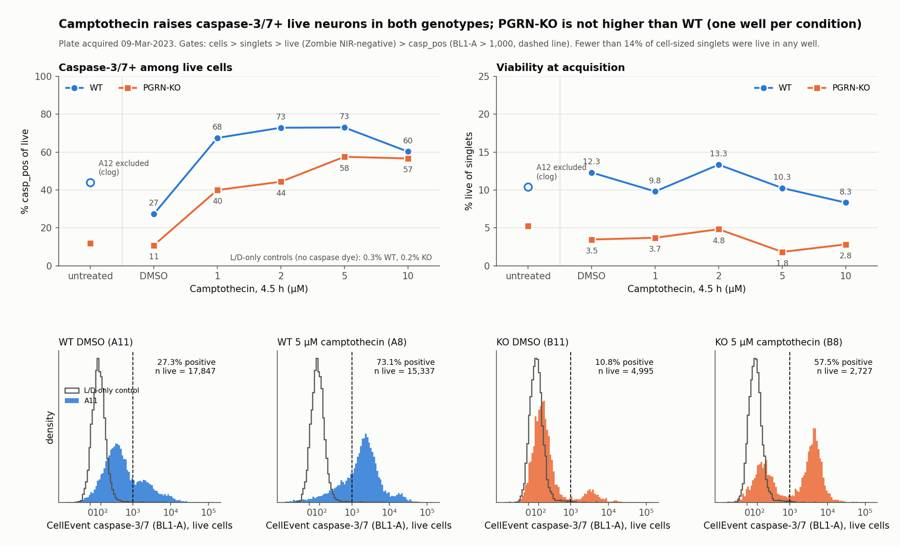
107
agent
Figure is rendered and needs a few label fixes; after that I'll write the report and `answer.json`, then verify all deliverables.
108
tool call · Bash
cd /task/work; python3 - <<'EOF'
s=open('final.py').read()
s=s.replace("ticks=[0,100,1000,10000,100000]","ticks=[0,1000,10000,100000]")
s=s.replace("ax.set_xticklabels(['0','10²','10³','10⁴','10⁵'])","ax.set_xticklabels(['0','10³','10⁴','10⁵'])")
s=s.replace("xytext=(0,9 if c==WT else -15)","xytext=(0,9 if (c==WT or ymax!=100) else -15)")
s=s.replace("ax.legend(frameon=False,fontsize=7.5,loc='upper left',bbox_to_anchor=(0.0,0.8))","ax.legend(frameon=False,fontsize=7.5,loc='upper right',bbox_to_anchor=(1.0,0.78))")
s=s.replace("hspace=0.5","hspace=0.42")
open('final.py','w').write(s)
EOF
python3 -I final.py 2>&1 | grep -v -i warn | tail -2109
tool call · Read
{
"file_path": "/task/outputs/figure.png"
}110
tool output
30 WT_LD_only_FMO_control__viability A6 1 9.23 31 KO_LD_only_FMO_control__viability B6 1 5.98
111
tool output
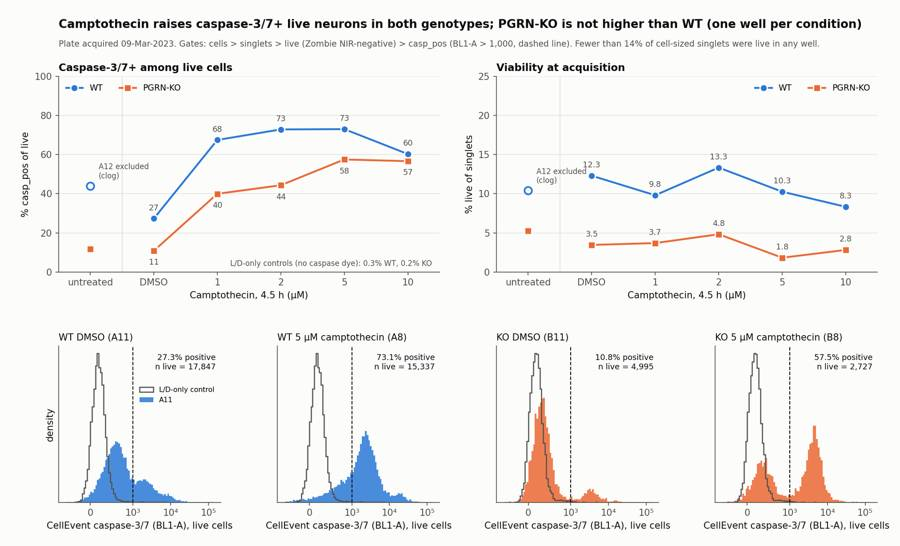
113
tool call · Bash
cd /task/work; cat > write.py <<'EOF'
import pandas as pd, json
OUT='/task/outputs/'
x=pd.read_csv('per_well.csv').set_index('well')
cs=pd.read_csv(OUT+'condition_summary.csv').set_index('condition')
g=lambda c: cs.loc[c,'mean']
tab="| Well | Sample | all_events | cells | singlets | live | % live of singlets | casp_pos | % casp_pos of live | median BL1-A, live |\n|---|---|---|---|---|---|---|---|---|---|\n"
for w,r in x.iterrows():
tab+=f"| {w} | {r['sample']} | {int(r.all_events):,} | {int(r.cells):,} | {int(r.singlets):,} | {int(r.live):,} | {r.pct_live:.1f} | {int(r.casp_pos):,} | {r.pct_casp_pos:.1f} | {r.live_medBL1:.0f} |\n"
Q="Is there a difference in caspase-3/7 activity between PGRN-KO and WT (PGP1) iPSC-derived neurons, with camptothecin added as the apoptosis inducer, and does the CellEvent flow assay work well enough to measure it?"
report=f"""## Question
{Q}
This was the first optimisation run of the assay; the working hypothesis in the plan is that PGRN loss raises caspase activity.
## Methods
- **Data.** 18 FCS files (Attune NxT, 09-Mar-2023), one well per sample: for each genotype an unstained well, a caspase-only well, a live/dead-only well, camptothecin at 10, 5, 2 and 1 µM for 4.5 h, DMSO and untreated. Channels: BL1-A = CellEvent caspase-3/7, RL3-A = Zombie NIR.
- **Compensation.** None. The file spillover matrix is identity, and the single-stain wells show no cross-talk (caspase-only A4: RL3-A median 17, the same as unstained A2; L/D-only A6: BL1-A median 153 vs 111 unstained).
- **Gates** (one FlowKit strategy for all wells, raw linear units, saved in `gates.xml`):
1. `cells`: polygon on FSC-A × SSC-A, FSC-A 125k–480k. It removes the debris continuum and off-scale aggregates. The lower FSC edge sits in the valley between debris and the Zombie-negative cell cluster (centred near FSC-A 220k).
2. `singlets`: SSC-H / SSC-A between 0.65 and 1.15. SSC was used because FSC-H flattens above about 190k on this instrument.
3. `live`: RL3-A < 300. This is the Zombie NIR-negative cluster, separated by a valley from a dim damaged population (about 1,000) and from dead cells (about 15,000).
4. `dead`: RL3-A ≥ 2,500, also under `singlets` (reported for accounting only).
5. `casp_pos`: BL1-A ≥ 1,000 within `live`. The threshold sits in the valley of the bimodal KO distributions and leaves 0.3% (WT, A6) and 0.2% (KO, B6) positive in the L/D-only controls.
- **Readouts.** Primary: % `casp_pos` of `live`. Secondary: % `live` of `singlets` (viability at acquisition). No normalisation.
- **Why live cells only.** Dead cells in every caspase-stained well form one narrow BL1-A peak whose brightness is well-specific and doubles with FSC-A (a DNA-content pattern). In this no-wash, unfixed stain the cleaved dye labels every permeable nucleus, so caspase signal in dead cells does not report that cell's own caspase activity.
- **QC.** Event rate over time, coincidence counts, detector saturation and first-half versus second-half stability of the readout were checked for every well.
## Results
**Per-well counts**
{tab}
(In the unstained and caspase-only wells there is no Zombie NIR, so `live` contains every singlet and the caspase percentage there is not a live-cell measurement.)
**Controls and well quality**
- Staining controls behave as labelled; no mislabel was detected.
- **A12 (WT untreated) is excluded for a clog.** Only 0.7% of its 409,074 events arrive in the first 20 s of a 47 s acquisition (other wells 43–46%), followed by a surge to 22,923 events/s. Its readout drifts within the well (41.9% → 47.2%) and disagrees with WT DMSO (27.3%).
- All other wells are kept. The readout is stable within each of them (first versus second half differs by at most 2.2 points).
**Camptothecin induces caspase-3/7 in live cells of both genotypes**
- WT: {g('WT_DMSO'):.1f}% in DMSO versus {g('WT_CPT_1uM'):.1f}, {g('WT_CPT_2uM'):.1f}, {g('WT_CPT_5uM'):.1f} and {g('WT_CPT_10uM'):.1f}% at 1, 2, 5 and 10 µM (mean {g('WT_CPT_pooled_1to10uM'):.1f}%, SD {cs.loc['WT_CPT_pooled_1to10uM','sd']:.1f} across the four doses). The response is already at plateau at 1 µM.
- KO: {g('KO_DMSO'):.1f}% in DMSO and {g('KO_untreated'):.1f}% untreated versus {g('KO_CPT_1uM'):.1f}, {g('KO_CPT_2uM'):.1f}, {g('KO_CPT_5uM'):.1f} and {g('KO_CPT_10uM'):.1f}% (mean {g('KO_CPT_pooled_1to10uM'):.1f}%, SD {cs.loc['KO_CPT_pooled_1to10uM','sd']:.1f}). KO shows a graded dose response.
- Median BL1-A of live cells moves the same way: WT 433 → 1,450–2,019; KO 151 → 346–2,698.
**PGRN-KO is not higher than WT**
- Basal (DMSO): KO {g('KO_DMSO'):.1f}% versus WT {g('WT_DMSO'):.1f}%, so KO is 16.5 points lower (0.40×). KO is lower with every gate variant tried (BL1 threshold 700–2,500, Zombie cut 100–2,500, FSC edge 100k–160k: KO 7–22% versus WT 13–34%).
- Under camptothecin, KO is lower at every dose with the reported threshold (gap 3.6–28.5 points), but this depends on the threshold. WT positives are dimmer (peak near BL1-A 2,500) than KO positives (peak near 5,000), and at a threshold of 2,500 the order reverses (KO 34–51% versus WT 30–40%).
**Viability is very low in every well, and lower in KO**
- WT: {g('WT_DMSO__viability'):.1f}% of singlets are live in DMSO (8.3–13.3% across treated wells).
- KO: {g('KO_DMSO__viability'):.1f}% in DMSO and {g('KO_untreated__viability'):.1f}% untreated (1.8–4.8% across treated wells).
- Camptothecin does not clearly reduce viability over 4.5 h, so most of the death is not treatment-related.
## Conclusion
The expected increase in caspase-3/7 activity in PGRN-KO neurons is not present on this plate. In the vehicle wells KO has fewer caspase-positive live cells than WT (10.8% versus 27.3%), and under camptothecin the genotype difference is not robust to the positivity threshold. Each condition is a single well and the genotypes sit on separate rows, so the genotype comparison is an observation, not a result.
The assay itself detects caspase activation: camptothecin raises caspase-positive l
… [8,357 more characters not shown]114
tool output
count mismatches 0 rows 108 pops ['all_events' 'cells' 'singlets' 'live' 'dead' 'casp_pos'] {'all_events': array(['other'], dtype=object), 'casp_pos': array(['marker_positive'], dtype=object), 'cells': array(['cells'], dtype=object), 'dead': array(['other'], dtype=object), 'live': array(['live'], dtype=object), 'singlets': array(['singlets'], dtype=object)}
issue_type decision
none keep 17
clog exclude 1
Name: count, dtype: int64
5 ['## Question\n', '## Methods\n', '## Results\n', '## Conclusion\n', '## Caveats\n', '## Recommendation\n']
file well population role parent count pct_of_parent
0 Caspase_WT_KO_optimization_caspase_Group_A2.fcs A2 all_events other none 365736 NaN
1 Caspase_WT_KO_optimization_caspase_Group_A2.fcs A2 cells cells all_events 162679 44.479898
2 Caspase_WT_KO_optimization_caspase_Group_A2.fcs A2 singlets singlets cells 128783 79.163875
3 Caspase_WT_KO_optimization_caspase_Group_A2.fcs A2 live live singlets 128780 99.997670
4 Caspase_WT_KO_optimization_caspase_Group_A2.fcs A2 dead other singlets 0 0.000000
5 Caspase_WT_KO_optimization_caspase_Group_A2.fcs A2 casp_pos marker_positive live 2039 1.583320
6 Caspase_WT_KO_optimization_caspase_Group_A4.fcs A4 all_events other none 440820 NaN
condition object
wells object
n_wells_used int64
mean float64
sd float64
metric_definition object
normalisation_applied object
dtype: object
total 272
drwxr-xr-x 2 root root 4096 Nov 10 19:23 .
drwxr-xr-x 5 root root 4096 Nov 10 19:13 ..
-rw-r--r-- 1 root root 4411 Nov 10 19:23 answer.json
-rw-r--r-- 1 root root 4161 Nov 10 19:22 condition_summary.csv
-rw-r--r-- 1 root root 10443 Nov 10 19:20 counts.csv
-rw-r--r-- 1 root root 218839 Nov 10 19:22 figure.png
-rw-r--r-- 1 root root 1935 Nov 10 19:22 flags.csv
-rw-r--r-- 1 root root 3431 Nov 10 19:20 gates.xml
-rw-r--r-- 1 root root 9832 Nov 10 19:23 report.md116
agent
Deliverables are written and the saved gates reproduce every count; I'm doing a last check of two numbers quoted in the report before finishing.
117
tool call · Bash
cd /task/work; python3 -I - <<'EOF' 2>&1 | grep -v -i warn
import pickle, numpy as np, pandas as pd
from matplotlib.path import Path
D=pickle.load(open('D.pkl','rb'))
poly=Path([(125e3,50e3),(220e3,50e3),(340e3,100e3),(480e3,250e3),(480e3,560e3),(260e3,560e3),(125e3,330e3)])
for w in ['A6','A11','A8','B6','B11','B8']:
e=D[w]; c=poly.contains_points(e[['FSC-A','SSC-A']].values); rr=e['SSC-H']/e['SSC-A']; s=c&(rr>0.65)&(rr<1.15)
lv=s&(e['RL3-A']<300); d=s&(e['RL3-A']>=2500); mid=s&(e['RL3-A']>=300)&(e['RL3-A']<2500)
print(w,'live RL3 median',round(np.median(e['RL3-A'][lv])),'dead RL3 median',round(np.median(e['RL3-A'][d])),'mid n',mid.sum(),'mid median',round(np.median(e['RL3-A'][mid])))
EOF
sed -i 's/1\.7–3 times brighter/about 2–3 times brighter/' /task/outputs/report.md write.py
sed -i 's/1\.7-3x brighter/about 2-3x brighter/' /task/outputs/answer.json write.py
grep -c "2–3 times" /task/outputs/report.md; grep -c "2-3x" /task/outputs/answer.json; python3 -I -c "import json;json.load(open('/task/outputs/answer.json'));print('json ok')"118
tool output
A6 live RL3 median -124 dead RL3 median 18553 mid n 8018 mid median 981 A11 live RL3 median -92 dead RL3 median 17711 mid n 7726 mid median 912 A8 live RL3 median -125 dead RL3 median 19238 mid n 6736 mid median 946 B6 live RL3 median -112 dead RL3 median 19713 mid n 5546 mid median 1014 B11 live RL3 median -12 dead RL3 median 9470 mid n 5088 mid median 901 B8 live RL3 median -124 dead RL3 median 16863 mid n 2383 mid median 1027 1 1 json ok
120
tool call · Bash
cd /task/outputs; python3 -I - <<'EOF' p='/task/outputs/report.md'; s=open(p).read() a="(median about −320), consistent"; b="(median about −100 in most wells), consistent" assert a in s; s=s.replace(a,b) a="and from dead cells (about 15,000)"; b="and from dead cells (median about 9,500–20,000)" assert a in s; s=s.replace(a,b) open(p,'w').write(s) EOF grep -n "−100\|9,500–20,000" report.md | cut -c1-160; head -3 flags.csv | cut -c1-200; cat gates.xml | head -30
121
tool output
12: 3. `live`: RL3-A < 300. This is the Zombie NIR-negative cluster, separated by a valley from a dim damaged population (about 1,000) and from dead cells (med
76:- **Zombie-negative cells read below zero in RL3-A** (median about −100 in most wells), consistent with background dye in an unwashed sample. The live gate
file,well,issue_type,evidence,decision
Caspase_WT_KO_optimization_caspase_Group_A2.fcs,A2,none,,keep
Caspase_WT_KO_optimization_caspase_Group_A4.fcs,A4,none,,keep
<?xml version='1.0' encoding='UTF-8'?>
<gating:Gating-ML xmlns:gating="http://www.isac-net.org/std/Gating-ML/v2.0/gating" xmlns:data-type="http://www.isac-net.org/std/Gating-ML/v2.0/datatypes" xmlns:transforms="http://www.isac-net.org/std/Gating-ML/v2.0/transformations">
<gating:PolygonGate gating:id="cells">
<gating:dimension gating:compensation-ref="uncompensated">
<data-type:fcs-dimension data-type:name="FSC-A"/>
</gating:dimension>
<gating:dimension gating:compensation-ref="uncompensated">
<data-type:fcs-dimension data-type:name="SSC-A"/>
</gating:dimension>
<gating:vertex>
<gating:coordinate data-type:value="125000.0"/>
<gating:coordinate data-type:value="50000.0"/>
</gating:vertex>
<gating:vertex>
<gating:coordinate data-type:value="220000.0"/>
<gating:coordinate data-type:value="50000.0"/>
</gating:vertex>
<gating:vertex>
<gating:coordinate data-type:value="340000.0"/>
<gating:coordinate data-type:value="100000.0"/>
</gating:vertex>
<gating:vertex>
<gating:coordinate data-type:value="480000.0"/>
<gating:coordinate data-type:value="250000.0"/>
</gating:vertex>
<gating:vertex>
<gating:coordinate data-type:value="480000.0"/>
<gating:coordinate data-type:value="560000.0"/>
</gating:vertex>
<gating:vertex>122
agent
The analysis is complete: all seven deliverables are in `/task/outputs/`, and re-applying the saved gates to the raw files reproduces every count in `counts.csv`.
**Answer to the plan's question: no.** The expected increase in caspase-3/7 activity in PGRN-KO neurons is not seen on this plate, and the assay needs optimisation before the genotype comparison can be trusted.
| Readout (one well each unless noted) | WT | PGRN-KO |
|---|---|---|
| Caspase+ of live cells, DMSO | 27.3% | 10.8% |
| Caspase+ of live cells, camptothecin 1–10 µM (mean of four doses) | 68.4% | 49.6% |
| Live cells of singlets, DMSO | 12.3% | 3.5% |
- **Camptothecin works as a positive control.** It raises caspase-positive live cells about 2.5-fold in WT and 4.6-fold in KO. WT is already at plateau at 1 µM; KO shows a graded response.
- **KO is not higher than WT.** In vehicle wells KO is lower, and that holds across every gate variant I tried. Under camptothecin the genotype order reverses if the positivity threshold is raised, so I called that comparison "no clear change".
- **Viability is the main problem.** Only 2–13% of cell-sized singlets are Zombie-negative in any well, including untreated ones, so the readout describes a small surviving subset that differs in size by genotype.
- **One well excluded.** A12 (WT untreated) clogged: 0.7% of its events arrive in the first 20 s, then the rate surges. That leaves A11 as the only WT baseline well.
- **The genotype comparison is weak by design.** There is one well per condition, and WT and KO sit on separate rows acquired about 11 minutes apart, unfixed.
The readout is caspase-positive cells among live (Zombie-negative) singlets only. Dead cells take up the cleaved dye regardless of their own caspase state, so they were left out of the readout.
**Recommendation:** repeat with a gentler neuron harvest, aiming for at least 50% live cells in untreated wells. In the same repeat, run triplicate vehicle wells, interleave WT and KO across the plate, and dilute samples to lower the event rate. The harvest is the single change recorded in `answer.json`; replication is the other gap, and I put harvest first because replicates of a 90%-dead prep would still not be interpretable.
Files are in `/task/outputs/`:
- `gates.xml`
- `counts.csv`
- `flags.csv`
- `condition_summary.csv`
- `figure.png`
- `report.md`
- `answer.json`
final result
The analysis is complete: all seven deliverables are in `/task/outputs/`, and re-applying the saved gates to the raw files reproduces every count in `counts.csv`. **Answer to the plan's question: no.** The expected increase in caspase-3/7 activity in PGRN-KO neurons is not seen on this plate, and the assay needs optimisation before the genotype comparison can be trusted. | Readout (one well each unless noted) | WT | PGRN-KO | |---|---|---| | Caspase+ of live cells, DMSO | 27.3% | 10.8% | | Caspase+ of live cells, camptothecin 1–10 µM (mean of four doses) | 68.4% | 49.6% | | Live cells of singlets, DMSO | 12.3% | 3.5% | - **Camptothecin works as a positive control.** It raises caspase-positive live cells about 2.5-fold in WT and 4.6-fold in KO. WT is already at plateau at 1 µM; KO shows a graded response. - **KO is not higher than WT.** In vehicle wells KO is lower, and that holds across every gate variant I tried. Under camptothecin the genotype order reverses if the positivity threshold is raised, so I called that comparison "no clear change". - **Viability is the main problem.** Only 2–13% of cell-sized singlets are Zombie-negative in any well, including untreated ones, so the readout describes a small surviving subset that differs in size by genotype. - **One well excluded.** A12 (WT untreated) clogged: 0.7% of its events arrive in the first 20 s, then the rate surges. That leaves A11 as the only WT baseline well. - **The genotype comparison is weak by design.** There is one well per condition, and WT and KO sit on separate rows acquired about 11 minutes apart, unfixed. The readout is caspase-positive cells among live (Zombie-negative) singlets only. Dead cells take up the cleaved dye regardless of their own caspase state, so they were left out of the readout. **Recommendation:** repeat with a gentler neuron harvest, aiming for at least 50% live cells in untreated wells. In the same repeat, run triplicate vehicle wells, interleave WT and KO across the plate, and dilute samples to lower the event rate. The harvest is the single change recorded in `answer.json`; replication is the other gap, and I put harvest first because replicates of a 90%-dead prep would still not be interpretable. Files are in `/task/outputs/`: - `gates.xml` - `counts.csv` - `flags.csv` - `condition_summary.csv` - `figure.png` - `report.md` - `answer.json`